Influence Lines of determinate and Indeterminate Structures
Introductoion
Influence lines have importante application for the design of structures that resist large live loads. In this module we will discuss how to draw the influence line for a statically determinate structure. The theory is applied to structures subjected to a distributed load or a series of concentrated forces, and specific applications to floor girders and bridge trusses are given. The determination of the absolute maximum live shear and moment in a member is discussed at the end of this module
Learning outcomes: apply the methods of structural analysis for external and internal actions on various types of structural systems due to static and moving loads.
Learning objectives
Student learning objectives for this module upon completion of this module, you will be able to:
• Know the meaning of influence lines.
• Determine its an important part in the design of bridges, industrial crane rails, conveyors, and other structures where loads move across their span.
Learning activities
Activities for this module
• Do the assignments and problem sets
• Take the quiz (Quiz1)
Influence Lines of determinate Structures
I.1. Defintion
An influence line represents the variation of the reaction, shear, moment, or deflection at a specific point in a member as a concentrated force moves over the member. Once this line is constructed, one can tell at a glance where the moving load should be placed on the structure so that it creates the greatest influence at the specified point. Furthermore, the magnitude of the associated reaction, shear, moment, or deflection at the point can then be calculated from the ordinates of the influence line diagram. For these reasons, influence lines play an important part in the design of bridges, industrial crane rails, conveyors, and other structures where loads move across their span.
The following sign conventions are used:
Table 1. sign conventions
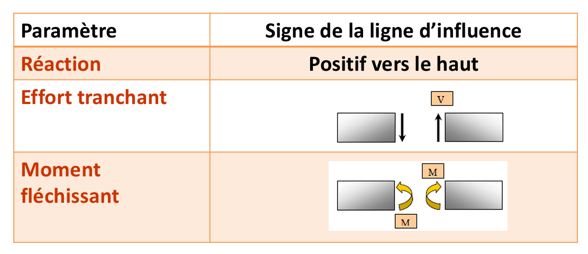
Remark: For other sign conventions, they must be clearly defined.
I.2 Influence Lines for Beams
I.2.1Procedure for Analysis(Analytical Method)
Either of the following two procedures can be used to construct the influence line at a specific point P in a member for any function (reaction, shear, or moment). For both of these procedures we will choose the moving force to have a dimensionless magnitude of unity.
I.2.1 Tabulate Values
Place a unit load \(P = 1\)at different positions \(x\)along the member.
For each position, use statics to calculate the required quantity: reaction \(R\), shear force \(V\), or bending moment \(M\).
Apply the adopted sign conventions.
For a statically determinate beam, the influence line consists of straight-line segments.
Prepare a table showing the unit-load position \(x\)and the corresponding value of \(R\), \(V\), or \(M\).
Plot the calculated values and connect the points to construct the influence line.
Key principle:
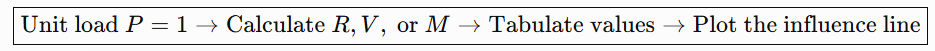
Example 01
Construct the influence line for the vertical reaction at \(A\)of the beam shown in Fig. 1 using the analytical method by tabulating the values.
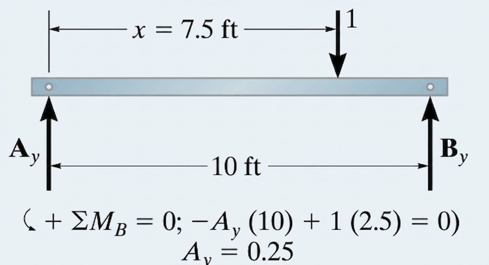
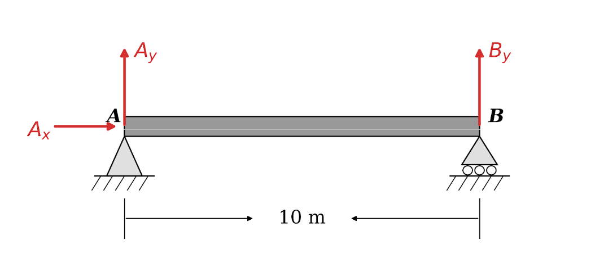
SOLUTION
Tabulate Values. A unit load is placed on the beam at each selected point x and the value of Ay is calculated by summing moments about B. For example, when x=2.5 m, x=5 m and x=7 m, see Figs. 2-3 and 4, respectively. The results for Ay are entered in the Table 2. A plot of these values yields the influence line for the reaction at A, Fig. 5. This line or diagram gives the reaction at A as the unit load moves from one position to the next along the beam.

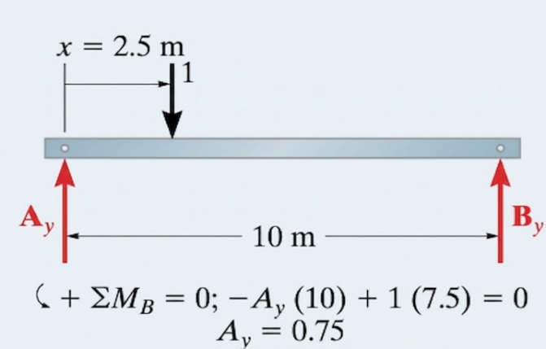
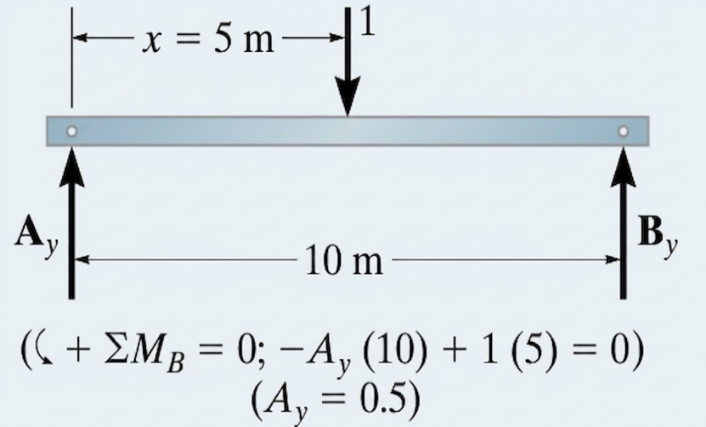
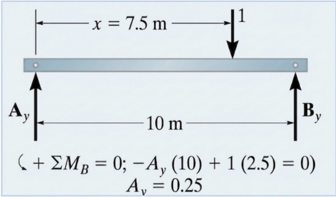
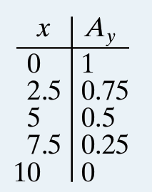
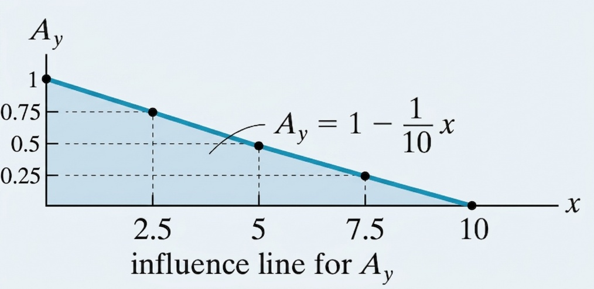
I.2.2 Influence-Line Equations
Rather than placing the unit load at specific points on the beam and plotting the values of Ay for each point, we can place the unit load a variable distance x from A, Fig 6. The reaction Ay as a function of x can be determined from.
Influence Line Equation
The equation expressing the reaction \(A_{y}\) as a function of the position \(x\) of the unit load (\(P = 1\)) on the \(10\text{~m}\) beam is:
\[A_{y}(x) = 1 - \frac{1}{10}x\quad\text{for~}0 \leq x \leq 10\text{~m}\]
Step-by-Step Derivation Method
Definition of distances :
The total span of the beam is \(L = 10\text{~m}\).
The unit load \(P = 1\) is located at a distance \(x\) from support \(A\).
The lever arm of the load \(P\) relative to support \(B\) is \((10 - x)\).
Moment equilibrium equation about \(B\) (\(\sum_{}^{}M_{B} = 0\)):
Taking counterclockwise as positive, the reaction \(A_{y}\) creates a clockwise (negative) moment and the unit load \(1\) creates a counterclockwise (positive) moment about \(B\):
\[- A_{y} \cdot (10) + 1 \cdot (10 - x) = 0\]
Isolating \(A_{y}\):
\[10 \cdot A_{y} = 10 - x\]
\[A_{y} = \frac{10 - x}{10} = 1 - \frac{1}{10}x\]
Key Point Verification
\(x = 0\text{~m}\): \(A_{y} = 1 - \frac{0}{10} = 1\)
\(x = 2.5\text{~m}\): \(A_{y} = 1 - \frac{2.5}{10} = 0.75\)
\(x = 5\text{~m}\): \(A_{y} = 1 - \frac{5}{10} = 0.5\)
\(x = 7.5\text{~m}\): \(A_{y} = 1 - \frac{7.5}{10} = 0.25\)
\(x = 10\text{~m}\): \(A_{y} = 1 - \frac{10}{10} = 0\)
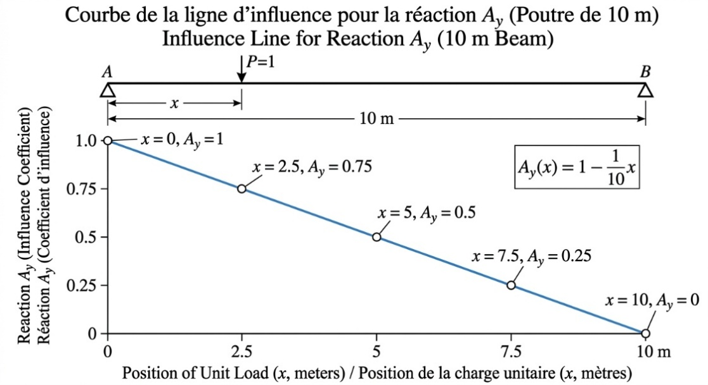
Example 02
Construct the influence line for the vertical reaction at B of the beam in Fig. 7.
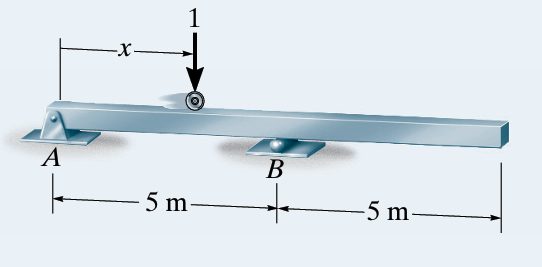
Soltution
Tabulate Values.
Statics verification for the reaction \(B_{y}\) at each load position \(x\) using moment equilibrium about support \(A\) (\(\sum_{}^{}M_{A} = 0\), counterclockwise positive):
Step-by-Step Statics Calculations
\(x = 0\text{~m}\) (Support A):
\[\sum_{}^{}M_{A} = 0 \Longrightarrow B_{y}(5) - 1(0) = 0 \Longrightarrow B_{y} = 0\]
\(x = 2.5\text{~m}\) (Mid-span AB):
\[\sum_{}^{}M_{A} = 0 \Longrightarrow B_{y}(5) - 1(2.5) = 0 \Longrightarrow B_{y} = \frac{2.5}{5} = 0.5\]
\(x = 5.0\text{~m}\) (Support B):
\[\sum_{}^{}M_{A} = 0 \Longrightarrow B_{y}(5) - 1(5) = 0 \Longrightarrow B_{y} = \frac{5}{5} = 1.0\]
\(x = 7.5\text{~m}\) (Mid-overhang):
\[\sum_{}^{}M_{A} = 0 \Longrightarrow B_{y}(5) - 1(7.5) = 0 \Longrightarrow B_{y} = \frac{7.5}{5} = 1.5\]
\(x = 10.0\text{~m}\) (Free End):
\[\sum_{}^{}M_{A} = 0 \Longrightarrow B_{y}(5) - 1(10) = 0 \Longrightarrow B_{y} = \frac{10}{5} = 2.0\]
Tabulated Values for \(B_{y}\)
| Position x (m) | Moment Equilibrium Equation | Reaction By |
|---|---|---|
| 0.0 | \[B_{y}(5) - 1(0) = 0\] | 0.0 |
| 2.5 | \[B_{y}(5) - 1(2.5) = 0\] | 0.5 |
| 5.0 | \[B_{y}(5) - 1(5) = 0\] | 1.0 |
| 7.5 | \[B_{y}(5) - 1(7.5) = 0\] | 1.5 |
| 10.0 | \[B_{y}(5) - 1(10) = 0\] | 2.0 |
Influence Line Equation for \(B_{y}\)
Influence-Line Equation. We must determine the reaction By when the unit load is placed a distance x from A, Fig. 7. Applying moment equilibrium about support \(A\) (\(\sum_{}^{}M_{A} = 0\), taking counterclockwise moments as positive) yields the continuous equation for \(B_{y}\) across the entire span Fig 8 : \(0 \leq x \leq 10\text{~}\text{m}\):
\[\sum_{}^{}M_{A} = 0 \Longrightarrow \left( B_{y} \cdot 5 \right) - (1 \cdot x) = 0\]
\[B_{y}(x) = \frac{x}{5} = 0.2x\quad\text{for~}0 \leq x \leq 10\text{~m}\]
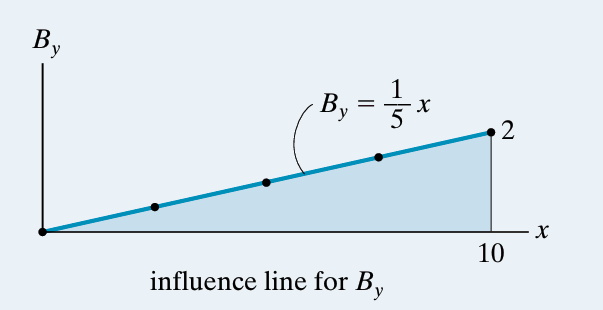
Example 3
Construct the influence line for the shear at point C of the beam in Fig. 9.
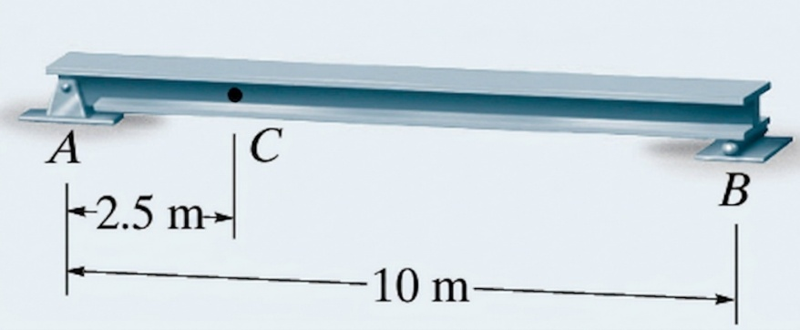
Solution
Tabulate Values. At each selected position x of the unit load, the method of sections is used to calculate the value of Vc. Note in particular that the unit load must be placed just to the left (x=2.5-) and just to the right (x=2.5+) of point C since the shear is discontinuous at C, Figs. 10 and 11. A plot of the values in Table 3 yields the influence line for the shear at C, Fig. 13. Here the diagram gives the shear at C as the unit load moves from one position to the next along the beam.
Internal shear force \(V_{C}\) calculation using static equilibrium equations (\(\sum_{}^{}M_{A} = 0\) and \(\sum_{}^{}F_{y} = 0\)) for each unit load position along the beam (\(L = 10\text{~ft} = 3.048\text{~m}\)) with section cut at \(x_{C} = 2.5\text{~ft} = 0.762\text{~}\text{m}\):
1. Load at \(x = 0\text{~ft}\) (\(0\text{~m}\))
Support Reactions:
\[\sum_{}^{}M_{A} = 0 \Longrightarrow B_{y}(10) - 1(0) = 0 \Longrightarrow B_{y} = 0\]
\[\sum_{}^{}F_{y} = 0 \Longrightarrow A_{y} + B_{y} - 1 = 0 \Longrightarrow A_{y} = 1\]
Equilibrium of Left Segment \(AC\):
\[\sum_{}^{}F_{y} = 0 \Longrightarrow A_{y} - 1 - V_{C} = 0 \Longrightarrow 1 - 1 - V_{C} = 0 \Longrightarrow \mathbf{V}_{\mathbf{C}}\mathbf{= 0}\]
2. Load at \(\mathbf{x}\mathbf{=}\mathbf{2.5}^{\mathbf{-}}\text{~ft}\) (\(\mathbf{0.762}^{\mathbf{-}}\text{~m}\)) — Just to the left of point \(\mathbf{C}\)
Support Reactions:
\[\sum_{}^{}M_{A} = 0 \Longrightarrow B_{y}(10) - 1(2.5) = 0 \Longrightarrow B_{y} = 0.25\]
\[\sum_{}^{}F_{y} = 0 \Longrightarrow A_{y} = 0.75\]
Equilibrium of Right Segment \(CB\):
\[\sum_{}^{}F_{y} = 0 \Longrightarrow V_{C} + B_{y} = 0 \Longrightarrow V_{C} + 0.25 = 0 \Longrightarrow \mathbf{V}_{\mathbf{C}}\mathbf{= - 0.25}\]
3. Load at \(\mathbf{x}\mathbf{=}\mathbf{2.5}^{\mathbf{+}}\text{~ft}\) (\(\mathbf{0.762}^{\mathbf{+}}\text{~m}\)) — Just to the right of point \(\mathbf{C}\)
Support Reactions:
\[\sum_{}^{}M_{A} = 0 \Longrightarrow B_{y}(10) - 1(2.5) = 0 \Longrightarrow B_{y} = 0.25\]
\[\sum_{}^{}F_{y} = 0 \Longrightarrow A_{y} = 0.75\]
Equilibrium of Left Segment \(AC\):
\[\sum_{}^{}F_{y} = 0 \Longrightarrow A_{y} - V_{C} = 0 \Longrightarrow 0.75 - V_{C} = 0 \Longrightarrow \mathbf{V}_{\mathbf{C}}\mathbf{= + 0.75}\]
4. Load at \(\mathbf{x}\mathbf{= 5}\text{~ft}\) (\(\mathbf{1.524}\text{~m}\))
Support Reactions:
\[\sum_{}^{}M_{A} = 0 \Longrightarrow B_{y}(10) - 1(5) = 0 \Longrightarrow B_{y} = 0.50\]
\[\sum_{}^{}F_{y} = 0 \Longrightarrow A_{y} = 0.50\]
Equilibrium of Left Segment \(AC\):
\[\sum_{}^{}F_{y} = 0 \Longrightarrow A_{y} - V_{C} = 0 \Longrightarrow 0.50 - V_{C} = 0 \Longrightarrow \mathbf{V}_{\mathbf{C}}\mathbf{= + 0.50}\]
5. Load at \(\mathbf{x}\mathbf{= 7.5}\text{~ft}\) (\(\mathbf{2.286}\text{~m}\))
Support Reactions:
\[\sum_{}^{}M_{A} = 0 \Longrightarrow B_{y}(10) - 1(7.5) = 0 \Longrightarrow B_{y} = 0.75\]
\[\sum_{}^{}F_{y} = 0 \Longrightarrow A_{y} = 0.25\]
Equilibrium of Left Segment \(AC\):
\[\sum_{}^{}F_{y} = 0 \Longrightarrow A_{y} - V_{C} = 0 \Longrightarrow 0.25 - V_{C} = 0 \Longrightarrow \mathbf{V}_{\mathbf{C}}\mathbf{= + 0.25}\]
6. Load at \(\mathbf{x}\mathbf{= 10}\text{~ft}\) (\(\mathbf{3.048}\text{~m}\))
Support Reactions:
\[\sum_{}^{}M_{A} = 0 \Longrightarrow B_{y}(10) - 1(10) = 0 \Longrightarrow B_{y} = 1.00\]
\[\sum_{}^{}F_{y} = 0 \Longrightarrow A_{y} = 0\]
Equilibrium of Left Segment \(AC\):
\[\sum_{}^{}F_{y} = 0 \Longrightarrow A_{y} - V_{C} = 0 \Longrightarrow 0 - V_{C} = 0 \Longrightarrow \mathbf{V}_{\mathbf{C}}\mathbf{= 0}\]
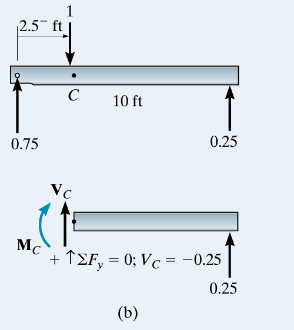
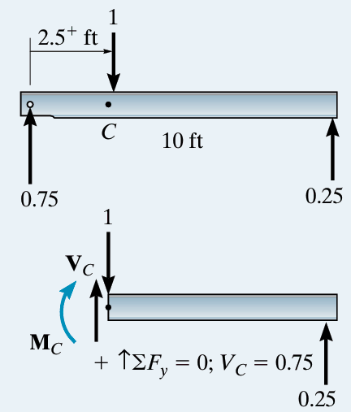
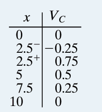
Influence-Line Equations.
Here two equations have to be determined, since there are two segments for the influence line due to the discontinuity of shear at C. First we determine Ay, Fig 12. Using the result we then obtain the internal shear at C for each region, Fig. 13. The equations are plotted in Fig.14.
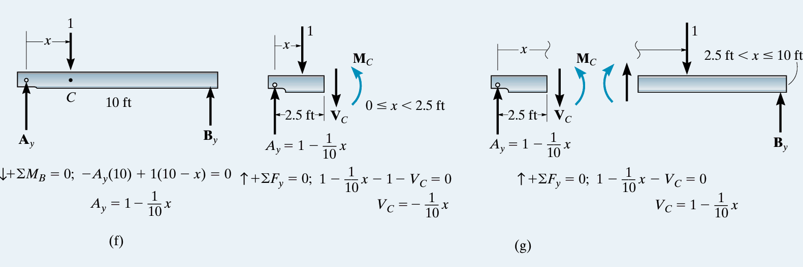
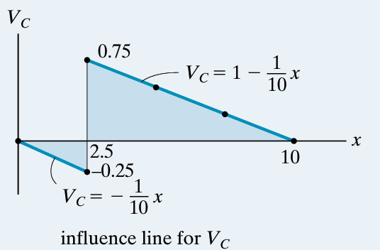
Example 04
Construct the influence line for the shear at point C of the beam in Fig. 15
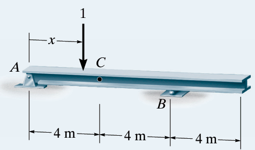
Tabluate values
Calculs Point par Point
\(\mathbf{x = 0}\text{~m}\) (Load at support \(A\) / Charge en \(A\)) :
\(\sum_{}^{}M_{B} = 0 \Longrightarrow R_{A} \cdot 8 - 1 \cdot 8 = 0 \Longrightarrow R_{A} = 1,00\)
\(\sum_{}^{}F_{y} = 0 \Longrightarrow R_{B} = 1 - 1,00 = 0,00\)
Shear force / Effort tranchant : \(V_{C} = R_{A} - 1 = 1,00 - 1 = 0,00\)
\(x = 2\text{~m}\) (Load between \(A\) and \(C\) / Charge entre \(A\) et \(C\)) :
\(\sum_{}^{}M_{B} = 0 \Longrightarrow R_{A} \cdot 8 - 1 \cdot 6 = 0 \Longrightarrow R_{A} = 0,75\)
\(\sum_{}^{}F_{y} = 0 \Longrightarrow R_{B} = 1 - 0,75 = 0,25\)
\(V_{C} = R_{A} - 1 = 0,75 - 1 = - 0,25\)
\(x = 4^{-}\text{~m}\) (Load just left of \(C\) / Charge à gauche de \(C\)) :
\(R_{A} = 0,50\), \(R_{B} = 0,50\), \(V_{C} = R_{A} - 1 = - 0,50\)
\(x = 4^{+}\text{~m}\) (Load just right of \(C\) / Charge à droite de \(C\)) :
\(R_{A} = 0,50\), \(R_{B} = 0,50\), \(V_{C} = R_{A} = + 0,50\)
\(x = 6\text{~m}\) (Load between \(C\) and \(B\) / Charge entre \(C\) et \(B\)) :
\(R_{A} = 0,25\), \(R_{B} = 0,75\), \(V_{C} = R_{A} = + 0,25\)
\(x = 8\text{~m}\) (Load at support \(B\) / Charge en \(B\)) :
\(R_{A} = 0,00\), \(R_{B} = 1,00\), \(V_{C} = 0,00\)
\(x = 10\text{~m}\) (Load on overhang / Charge sur le porte-à-faux) :
\(\sum_{}^{}M_{A} = 0 \Longrightarrow R_{B} \cdot 8 - 1 \cdot 10 = 0 \Longrightarrow R_{B} = 1,25\)
\(R_{A} = 1 - 1,25 = - 0,25 \Longrightarrow V_{C} = - 0,25\)
\(x = 12\text{~m}\) (Load at free end / Charge à l'extrémité libre) :
\(R_{B} = 1,50\), \(R_{A} = - 0,50 \Longrightarrow V_{C} = - 0,50\)
Tableau Récapitulatif (Summary Table)
| Position x (m) | Reaction RA | Reaction RB | Shear Force VC |
|---|---|---|---|
| 0 | \[1.00\] | \[0.00\] | \[0.00\] |
| 2 | \[0.75\] | \[0.25\] | \[- 0.25\] |
| \[4^{-}\] | \[0.50\] | \[0.50\] | \[- 0.50\] |
| \[4^{+}\] | \[0.50\] | \[0.50\] | \[+ 0.50\] |
| 6 | \[0.25\] | \[0.75\] | \[+ 0.25\] |
| 8 | \[0.00\] | \[1.00\] | \[0.00\] |
| 10 | \[- 0.25\] | \[1.25\] | \[- 0.25\] |
| 12 | \[- 0.50\] | \[1.50\] | \[- 0.50\] |
Influence-Line Equations.
Support Reactions Equations (Équations des réactions d'appui)
Moment equilibrium about \(B\) (\(\sum_{}^{}M_{B} = 0\)) [Équilibre des moments en \(B\)] :
\[R_{A}(x) \cdot 8 - 1 \cdot (8 - x) = 0 \Longrightarrow R_{A}(x) = 1 - \frac{x}{8}\]
Vertical force equilibrium (\(\sum_{}^{}F_{y} = 0\)) [Équilibre des forces verticales] :
\[R_{A}(x) + R_{B}(x) - 1 = 0 \Longrightarrow R_{B}(x) = \frac{x}{8}\]
Influence Line Equations for Shear Force \(V_{C}\) (Équations de l'effort tranchant en \(C\))
Segment 1 (\(0 \leq x < 4\text{~m}\)) — Unit load to the left of \(C\) (Charge à gauche de \(C\)) :
\[V_{C}(x) = R_{A}(x) - 1 = \left( 1 - \frac{x}{8} \right) - 1 = - \frac{x}{8}\]
Segment 2 (\(4 < x \leq 12\text{~m}\)) — Unit load to the right of \(C\) (Charge à droite de \(C\)) :
\[V_{C}(x) = R_{A}(x) = 1 - \frac{x}{8}\]
Summary Table (Tableau des valeurs)
| Position x (m) | Segment / Condition | Equation for VC | Calculation | Shear Force VC |
|---|---|---|---|---|
| 0 | \[0 \leq x < 4\] | \[V_{C} = - \frac{x}{8}\] | \[- \frac{0}{8}\] | 0.00 |
| 2 | \[0 \leq x < 4\] | \[V_{C} = - \frac{x}{8}\] | \[- \frac{2}{8}\] | -0.25 |
| \[\mathbf{4}^{\mathbf{-}}\] | Just left of \(C\) | \[V_{C} = - \frac{x}{8}\] | \[- \frac{4}{8}\] | -0.50 |
| \[\mathbf{4}^{\mathbf{+}}\] | Just right of \(C\) | \[V_{C} = 1 - \frac{x}{8}\] | \[1 - \frac{4}{8}\] | +0.50 |
| 6 | \[4 < x \leq 12\] | \[V_{C} = 1 - \frac{x}{8}\] | \[1 - \frac{6}{8}\] | +0.25 |
| 8 | \[4 < x \leq 12\] | \[V_{C} = 1 - \frac{x}{8}\] | \[1 - \frac{8}{8}\] | 0.00 |
| 10 | \[4 < x \leq 12\] | \[V_{C} = 1 - \frac{x}{8}\] | \[1 - \frac{10}{8}\] | -0.25 |
| 12 | \[4 < x \leq 12\] | \[V_{C} = 1 - \frac{x}{8}\] | \[1 - \frac{12}{8}\] | -0.50 |
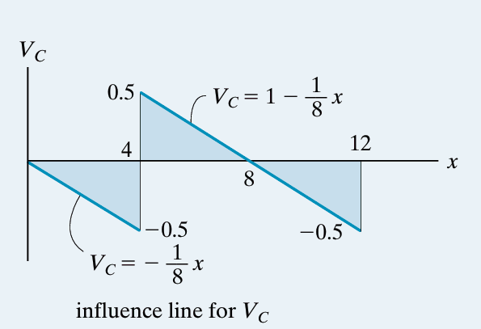
Example 05
Construct the influence line for the moment at point C of the beam in Fig. 17.
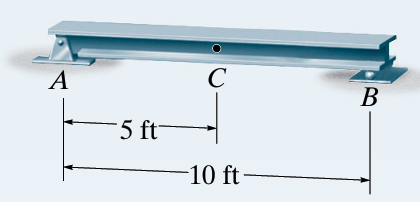
Solution
Tabulate values
At each selected position of the unit load, the value of MC is calculated using the method of sections. For example, see Fig. 18 for x=2.5 ft. A plot of the values in Table 04 yields the influence line for the moment at C figure 19. This diagram gives the moment at C as the unit load moves from one position to the next along the beam.
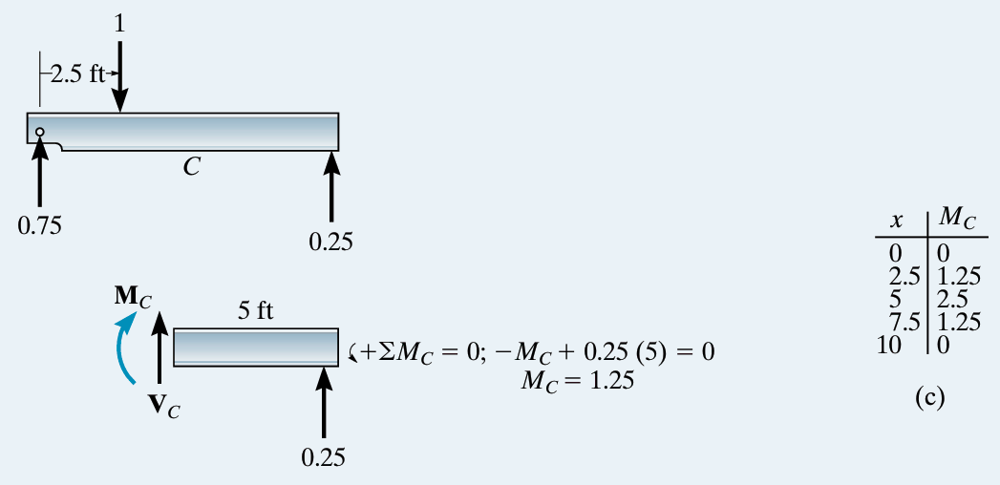
Direct Point-by-Point Calculations (Calculs directs point par point)
\(x = 0\text{~ft}\) (Load at support \(A\) / Charge en \(A\)) :
\(\sum_{}^{}M_{B} = 0 \Longrightarrow R_{A} \cdot 10 - 1 \cdot 10 = 0 \Longrightarrow R_{A} = 1.00\)
\(\sum_{}^{}F_{y} = 0 \Longrightarrow R_{B} = 1 - 1.00 = 0.00\)
Bending moment / Moment fléchissant : \(M_{C} = R_{B} \cdot 5 = 0.00 \cdot 5 = 0.00\text{~ft}\)
\(x = 2.5\text{~ft}\) (Load between \(A\) and \(C\) / Charge entre \(A\) et \(C\)) :
\(\sum_{}^{}M_{B} = 0 \Longrightarrow R_{A} \cdot 10 - 1 \cdot 7.5 = 0 \Longrightarrow R_{A} = 0.75\)
\(\sum_{}^{}F_{y} = 0 \Longrightarrow R_{B} = 1 - 0.75 = 0.25\)
Bending moment / Moment fléchissant : \(M_{C} = R_{B} \cdot 5 = 0.25 \cdot 5 = 1.25\text{~ft}\)
\(x = 5\text{~ft}\) (Load at point \(C\) / Charge en \(C\)) :
\(\sum_{}^{}M_{B} = 0 \Longrightarrow R_{A} \cdot 10 - 1 \cdot 5 = 0 \Longrightarrow R_{A} = 0.50\)
\(\sum_{}^{}F_{y} = 0 \Longrightarrow R_{B} = 1 - 0.50 = 0.50\)
Bending moment / Moment fléchissant : \(M_{C} = R_{A} \cdot 5 = 0.50 \cdot 5 = 2.50\text{~ft}\)
\(x = 7.5\text{~ft}\) (Load between \(C\) and \(B\) / Charge entre \(C\) et \(B\)) :
\(\sum_{}^{}M_{B} = 0 \Longrightarrow R_{A} \cdot 10 - 1 \cdot 2.5 = 0 \Longrightarrow R_{A} = 0.25\)
\(\sum_{}^{}F_{y} = 0 \Longrightarrow R_{B} = 1 - 0.25 = 0.75\)
Bending moment / Moment fléchissant : \(M_{C} = R_{A} \cdot 5 = 0.25 \cdot 5 = 1.25\text{~ft}\)
\(x = 10\text{~ft}\) (Load at support \(B\) / Charge en \(B\)) :
\(\sum_{}^{}M_{B} = 0 \Longrightarrow R_{A} \cdot 10 - 1 \cdot 0 = 0 \Longrightarrow R_{A} = 0.00\)
\(\sum_{}^{}F_{y} = 0 \Longrightarrow R_{B} = 1 - 0.00 = 1.00\)
Bending moment / Moment fléchissant : \(M_{C} = R_{A} \cdot 5 = 0.00 \cdot 5 = 0.00\text{~ft}\)
Summary Table 04 (Tableau Récapitulatif)
| Position x (ft) | Reaction RA | Reaction RB | Bending Moment MC (ft) |
|---|---|---|---|
| 0 | \[1.00\] | \[0.00\] | \[0.00\] |
| 2.5 | \[0.75\] | \[0.25\] | \[1.25\] |
| 5 | \[0.50\] | \[0.50\] | \[2.50\] |
| 7.5 | \[0.25\] | \[0.75\] | \[1.25\] |
| 10 | \[0.00\] | \[1.00\] | \[0.00\] |
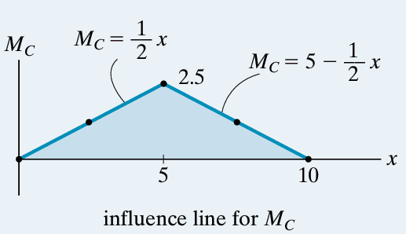
Influence-Line Equations.
The two line segments for the influence line can be determined using \(\sum_{}^{}M_{c}\) = 0 along with the method of sections shown in Fig. 19.
Support Reactions Equations
Moment equilibrium about support \(B\) (\(\sum_{}^{}M_{B} = 0\)) :
\[R_{A}(x) \cdot 10 - 1 \cdot (10 - x) = 0 \Longrightarrow R_{A}(x) = 1 - \frac{x}{10}\]
Vertical force equilibrium (\(\sum_{}^{}F_{y} = 0\)) :
\[R_{A}(x) + R_{B}(x) - 1 = 0 \Longrightarrow R_{B}(x) = \frac{x}{10}\]
Bending Moment Equations for \(M_{C}\) (Équations du moment fléchissant en \(C\))
Segment 1 (\(0 \leq x \leq 5\text{~ft}\)) — Unit load to the left of \(C\) (figure 20.a):
\[M_{C}(x) = R_{B}(x) \cdot 5 = \left( \frac{x}{10} \right) \cdot 5 = 0.5x\]
Segment 2 (\(5 \leq x \leq 10\text{~ft}\)) — Unit load to the right of \(C\ (figure\ \ 20.b)\) :
\[M_{C}(x) = R_{A}(x) \cdot 5 = \left( 1 - \frac{x}{10} \right) \cdot 5 = 5 - 0.5x\]
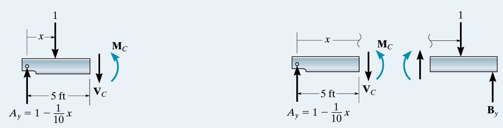
Summary Table (Tableau récapitulatif par équations)
| Position x (ft) | Segment / Condition | Equation for MC | Calculation | Reaction RA | Reaction RB | Bending Moment MC (ft) |
|---|---|---|---|---|---|---|
| 0 | \[0 \leq x \leq 5\] | \[M_{C} = 0.5x\] | \[0.5 \cdot 0\] | \[1.00\] | \[0.00\] | 0.00 |
| 2.5 | \[0 \leq x \leq 5\] | \[M_{C} = 0.5x\] | \[0.5 \cdot 2.5\] | \[0.75\] | \[0.25\] | 1.25 |
| 5 | Point \(C\) | \[M_{C} = 0.5x\] | \[0.5 \cdot 5\] | \[0.50\] | \[0.50\] | 2.50 |
| 7.5 | \[5 \leq x \leq 10\] | \[M_{C} = 5 - 0.5x\] | \[5 - 0.5 \cdot 7.5\] | \[0.25\] | \[0.75\] | 1.25 |
| 10 | \[5 \leq x \leq 10\] | \[M_{C} = 5 - 0.5x\] | \[5 - 0.5 \cdot 10\] | \[0.00\] | \[1.00\] | 0.00 |
Example 06
Construct the influence line for the moment at point C of the beam in Fig. 21
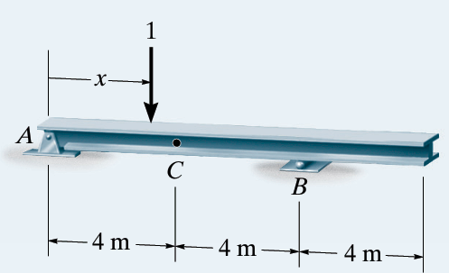
SOLUTION
Tabulate Values. Using statics and the method of sections, verify that the values of the moment MC at point C in Fig. 21 correspond to each position x of the unit load. A plot of the values in Fig. 22.b yields the influence line in Fig. 22.c.
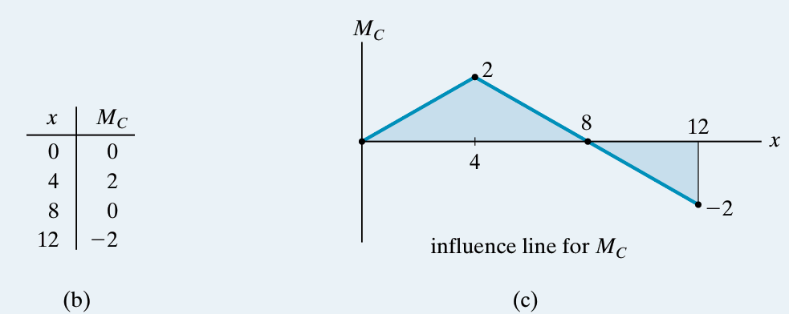
Influence-Line Equations.
Support Reactions Equations (Équations des réactions d'appui)
Moment equilibrium about \(B\) (\(\sum_{}^{}M_{B} = 0\)) [Équilibre des moments en \(B\)] :
\[R_{A}(x) \cdot 8 - 1 \cdot (8 - x) = 0 \Longrightarrow R_{A}(x) = 1 - \frac{x}{8}\]
Vertical force equilibrium (\(\sum_{}^{}F_{y} = 0\)) [Équilibre des forces verticales] :
\[R_{A}(x) + R_{B}(x) - 1 = 0 \Longrightarrow R_{B}(x) = \frac{x}{8}\]
Influence Line Equations for Bending Moment \(M_{C}\) (Équations du moment fléchissant)
Segment 1 (\(0 \leq x \leq 4\text{~m}\)) — Unit load to the left of \(C\) (Charge à gauche de \(C\)) :
\[M_{C}(x) = R_{B}(x) \cdot 4 = \left( \frac{x}{8} \right) \cdot 4 = 0.5x\]
Segment 2 (\(4 \leq x \leq 12\text{~m}\)) — Unit load to the right of \(C\) (Charge à droite de \(C\)) :
\[M_{C}(x) = R_{A}(x) \cdot 4 = \left( 1 - \frac{x}{8} \right) \cdot 4 = 4 - 0.5x\]
Summary Table (Tableau Récapitulatif)
| Position x (m) | Segment / Condition | Equation for MC | Reaction RA | Reaction RB | Bending Moment MC (m) |
|---|---|---|---|---|---|
| 0 | \[0 \leq x \leq 4\] | \[M_{C} = 0.5 \cdot 0\] | \[1.00\] | \[0.00\] | 0.00 |
| 2 | \[0 \leq x \leq 4\] | \[M_{C} = 0.5 \cdot 2\] | \[0.75\] | \[0.25\] | 1.00 |
| 4 | Point \(C\) | \[M_{C} = 0.5 \cdot 4\] | \[0.50\] | \[0.50\] | 2.00 |
| 6 | \[4 \leq x \leq 12\] | \[M_{C} = 4 - 0.5 \cdot 6\] | \[0.25\] | \[0.75\] | 1.00 |
| 8 | Support \(B\) | \[M_{C} = 4 - 0.5 \cdot 8\] | \[0.00\] | \[1.00\] | 0.00 |
| 10 | Overhang (Console) | \[M_{C} = 4 - 0.5 \cdot 10\] | \[- 0.25\] | \[1.25\] | -1.00 |
| 12 | Free End (Extrémité libre) | \[M_{C} = 4 - 0.5 \cdot 12\] | \[- 0.50\] | \[1.50\] | -2.00 |
I.3 MÜLLER-BRESLAU PRINCIPLE : QUALITATIVE KINEMATIC APPROACH
In 1886, Heinrich Müller-Breslau developed a technique for quickly determining the shape of an influence line.
The Müller-Breslau principle is based on the principle of virtual work and provides a simple way to construct the qualitative shape of influence lines.
Principle
The qualitative shape of the influence line for a given function, such as:
Support reaction (R)
Shear force (T) or (V)
Bending moment (M)
can be obtained by:
Releasing the restraint corresponding to the function being studied at the section where the influence line is required.
Applying a unit action corresponding to this function in its positive direction.
Allowing the modified structure to deform.
The deflected shape of the modified structure represents the qualitative shape of the influence line.
Easy rule to remember
RELEASE → APPLY → DEFORM → INFLUENCE LINE
Example 1: Influence Line for the Vertical Reaction (Ay)
Consider the beam shown in Fig. 23.a.
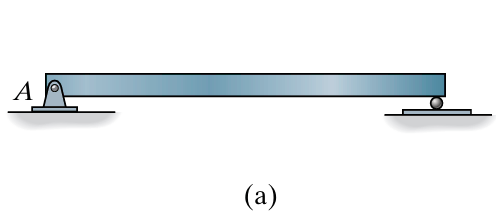
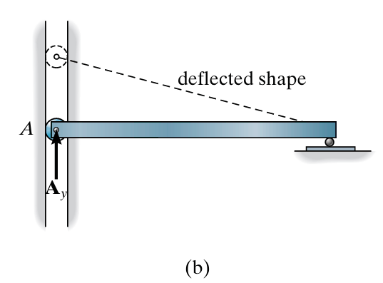
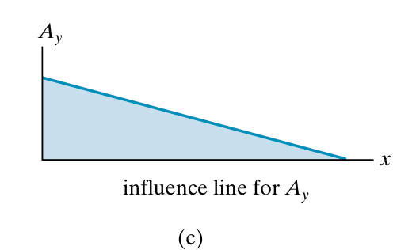
We want to determine the qualitative shape of the influence line for the vertical reaction (Ay) at A.
Step 1 – Release the reaction
Replace the pin at A with a roller guide, as shown in Fig. 23.b.
The roller guide still allows the beam to resist the horizontal force, but it cannot resist the vertical reaction (Ay).
Step 2 – Apply the positive action
Apply a positive upward force (Ay) at A.
Step 3 – Observe the deformation
The beam deflects into the dashed position shown in Fig. 23.c.
Conclusion
The dashed deflected shape in Fig. 23.c represents the qualitative shape of the influence line for (Ay).
Remember:
Release (Ay) → Apply (+Ay) → Observe the deflected shape →
Influence line for (Ay).
Example 2: Influence Line for the Shear Force at C
Let us determine the qualitative shape of the influence line for the shear force (VC) at section (C), as shown in Fig. 24.a.
Step 1 – Release the shear
The section at (C) is replaced by a roller guide, as shown in Fig. 24.b.
This support can resist moment and axial force, but it cannot resist shear force.
Step 2 – Apply the positive shear
Apply a positive shear force (VC) at point (C).
Step 3 – Observe the deformation
The beam deforms into the dotted shape shown in Fig. 24.b.
Step 4 – Obtain the influence line
This deformed shape gives the qualitative shape of the influence line for (VC), as shown in Fig. 24.c.
Conclusion
Release the shear → Apply (+VC) → Observe the deformation → Obtain the influence line for (VC).
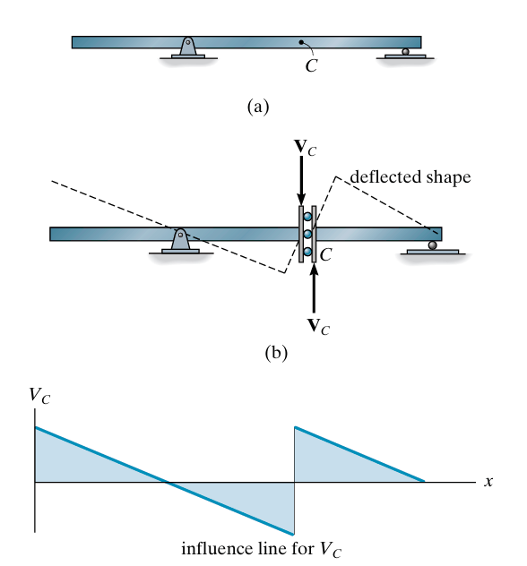
Example 3: Influence Line for the Bending Moment at C
Let us determine the qualitative shape of the influence line for the bending moment \(M_{C}\)at section \(C\), as shown in Fig. 25.a.
Step 1 – Release the moment
Introduce an internal hinge (articulation) at \(C\), as shown in Fig. 25.b.
The internal hinge can resist axial and shear forces, but it cannot resist a bending moment.
Step 2 – Apply the positive moment
Apply a positive bending moment \(M_{C}\)at \(C\).
Step 3 – Observe the deformation
The beam deforms into the dotted position shown in Fig. 25.b.
Step 4 – Obtain the influence line
The resulting deformed shape represents the qualitative shape of the influence line for \(M_{C}\), as shown in Fig. 25.c.
Conclusion
Release the moment → Apply \(+ M_{C}\)→ Observe the deformation → Obtain the influence line for \(M_{C}\).
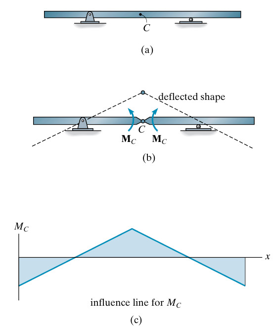
Exmaple 4
For each beam in Fig. 26.a through 26.c, sketch the influence line for the vertical reaction at A
SOLUTION
The support is replaced by a roller guide at A since it will resist Ax, but not Ay. The force Ay is then applied.
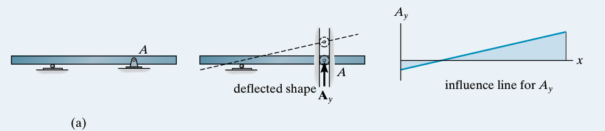
Again, a roller guide is placed at A and the force Ay is applied
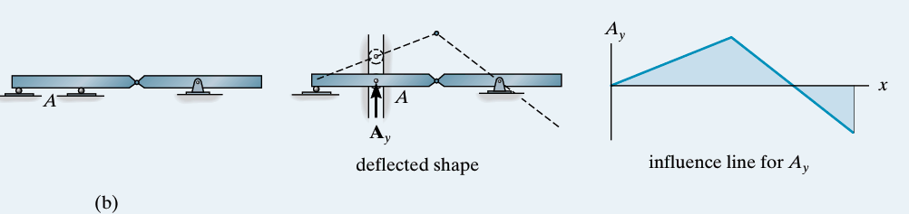
A double-roller guide must be used at A in this case, since this type of support will resist both a moment MA at the fixed support and axial load Ax, but will not resist Ay.
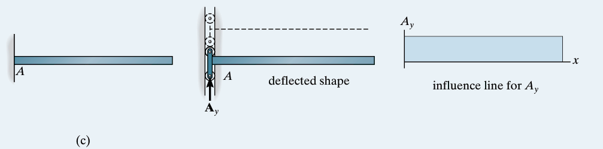
Example 05
For each beam in Figs. 27.a through 27.c, sketch the influence line for the shear at B.
SOLUTION
The roller guide is introduced at B and the positive shear VB is applied. Notice that the right segment of the beam will not deflect since the roller at A actually constrains the beam from moving vertically, either up or down
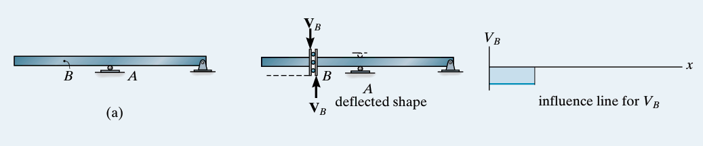
Placing the roller guide at B and applying the positive shear at B yields the deflected shape and corresponding influence line.
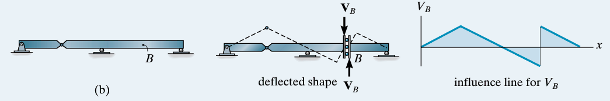
Again, the roller guide is placed at B, the positive shear is applied, and the deflected shape and corresponding influence line are shown. Note that the left segment of the beam does not deflect, due to the fixed support.
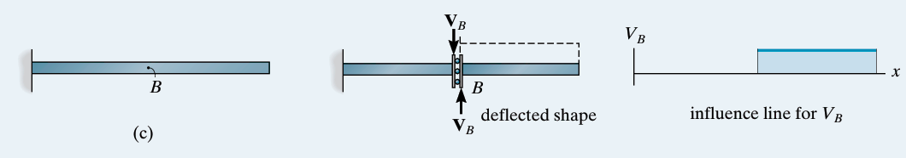
Example 06
For each beam in Figs. 28.a through Fig. 28.c, sketch the influence line for the moment at B.
SOLUTION
A hinge is introduced at B and positive moments MB are applied to the beam. The deflected shape and corresponding influence line are shown.
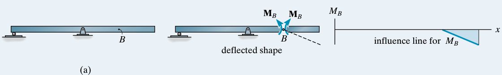
Placing a hinge at B and applying positive moments MB to the beam yields the deflected shape and influence line.
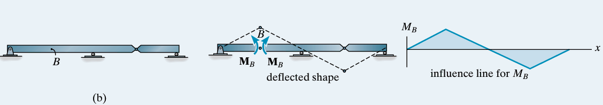
With the hinge and positive moment at B the deflected shape and influence line are shown. The left segment of the beam is constrained from moving due to the fixed wall at A
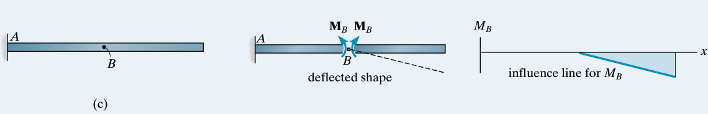
I.4. Influence Lines for Floor Girders
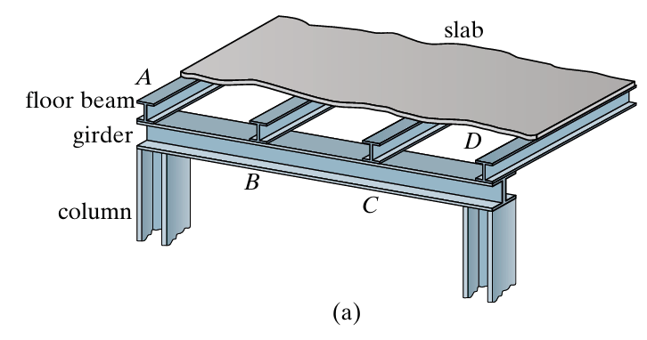
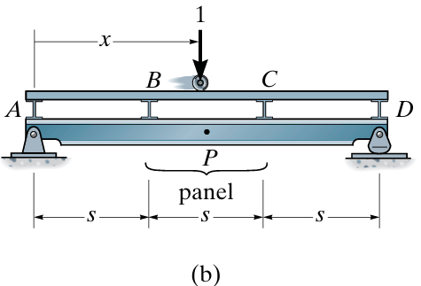
In a floor system, loads are transferred from the slab to the floor beams, then to the girder, and finally to the columns. The girder is simply supported by the columns. As shown in Fig. 29.a, the load is transferred to the girder at specific points A, B, C, and D, called panel points. The part between two panel points, such as B–C in Fig. 29.b, is called a panel. These points are important for drawing the influence lines of the girder.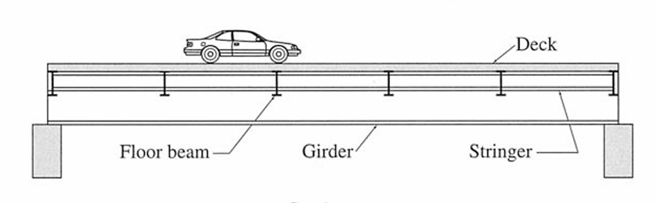
The influence line for a specified point on the girder can be determined using the same statics procedure, place the unit load at various points x on the floor slab and always compute the function (shear or moment) at the specified point P in the girder, Fig. 29.b. Plotting these values versus x yields the influence line for the function at P.
For example, when the unit load is placed on the floor slab, as shown in Fig. 29.b:
Determine the slab reactions \(F_{B}\ \)and \(F_{C}\).
Use these reactions to calculate the girder support reactions \(F_{A\ }\)and \(F_{D}\).
Cut the girder at point \(P\)and use the method of sections to determine the internal shear \(V_{P\ }\)and internal moment\({\ M}_{P\ }\).
\[V_{P\ } = R_{A\ } - F_{B}\]
\({\ M}_{P\ }\)=\(\ R_{A\ }\)x−\(F_{B}\)(x−s)
where:
\(V_{P}\)= internal shear at point \(P\)
\(M_{P}\)= internal moment at point \(P\)
\(R_{A}\)= girder reaction at \(A\)
\(F_{B}\)= reaction from the floor slab at \(B\)
\(x\)= distance from \(A\)to \(P\)
\(s\)= distance from \(A\)to \(B\)
Important : \(V_{P}\)is constant within the panel \(BC\), whereas \(M_{P}\)depends on the exact position of \(P\).
Step-by-Step Analysis
1. Slab Reactions (\(\mathbf{F}_{\mathbf{B}}\) and \(\mathbf{F}_{\mathbf{C}}\))
For a unit load acting on slab panel \(BC\) at distance \(x\) from \(A\):
Span of the panel segment = \(s\)
Position of unit load relative to point \(B\) = \(x - s\)
Applying static equilibrium to the slab span \(BC\):
\(\sum_{}^{}M_{C} = 0 \Longrightarrow F_{B} \cdot s = 1 \cdot (2s - x)\)
\[F_{B} = \frac{2s - x}{s} = 2 - \frac{x}{s}\]
\(\sum_{}^{}M_{B} = 0 \Longrightarrow F_{C} \cdot s = 1 \cdot (x - s)\)
\[F_{C} = \frac{x - s}{s} = \frac{x}{s} - 1\]
Girder Support Reactions (\(\mathbf{R}_{\mathbf{A}}\) and \(\mathbf{R}_{\mathbf{D}}\))
The total length of the girder is \(L = 3s\). The loads transmitted from the slab through the floor beams onto the girder are \(F_{B}\) at point \(B\) (\(x = s\)) and \(F_{C}\) at point \(C\) (\(x = 2s\)).
Applying equilibrium to the entire girder:
Taking moments about \(D\) (\(x = 3s\)):
\[\sum_{}^{}M_{D} = 0 \Longrightarrow R_{A}(3s) = F_{B}(2s) + F_{C}(s)\]
\[R_{A}(3s) = \left( 2 - \frac{x}{s} \right)(2s) + \left( \frac{x}{s} - 1 \right)(s) = 3s - x\]
\[R_{A} = \frac{3s - x}{3s} = 1 - \frac{x}{3s}\]
Taking moments about \(A\) (\(x = 0\)):
\[\sum_{}^{}M_{A} = 0 \Longrightarrow R_{D}(3s) = F_{B}(s) + F_{C}(2s)\]
\[R_{D}(3s) = \left( 2 - \frac{x}{s} \right)(s) + \left( \frac{x}{s} - 1 \right)(2s) = x\]
\[R_{D} = \frac{x}{3s}\]
Internal Forces at Point \(\mathbf{P}\) (\(\mathbf{V}_{\mathbf{P}}\) and \(\mathbf{M}_{\mathbf{P}}\))
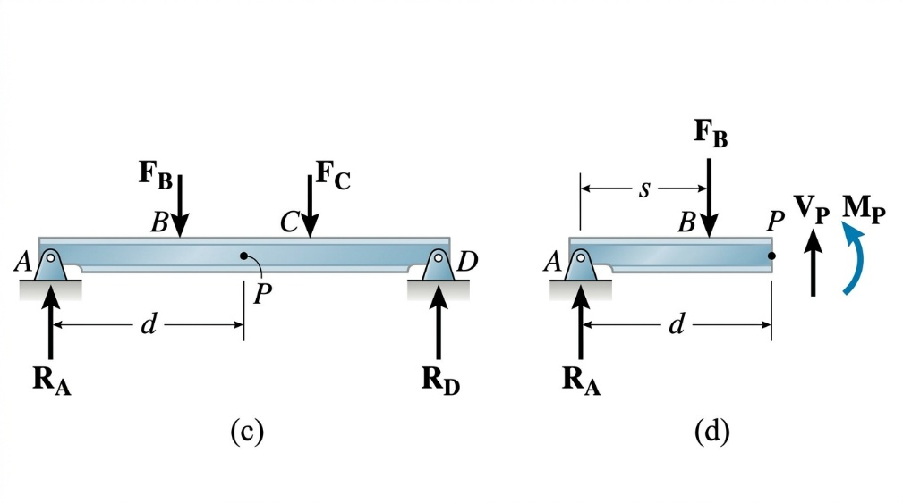
Consider a section cut at point \(P\) located at distance \(d\) from support \(A\) (where \(s < d < 2s\)). Isolate the left segment of the girder (\(A\) to \(P\)) Fig29.c and Fig 29.d:Internal Shear (\(V_{P}\)):
\[\sum_{}^{}F_{y} = 0 \Longrightarrow R_{A} - F_{B} - V_{P} = 0\]
\[V_{P} = R_{A} - F_{B} = \left( 1 - \frac{x}{3s} \right) - \left( 2 - \frac{x}{s} \right) = - 1 + \frac{2x}{3s}\]
(Note: \(V_{P}\) depends only on the unit load position \(x\), remaining uniform for any point \(P\) within panel \(BC\).)
Internal Moment (\(\mathbf{M}_{\mathbf{P}}\)):
\[\sum_{}^{}M_{P} = 0 \Longrightarrow M_{P} = R_{A} \cdot d - F_{B} \cdot (d - s)\]
\[M_{P} = \left( 1 - \frac{x}{3s} \right)d - \left( 2 - \frac{x}{s} \right)(d - s)\]
\[M_{P} = 2s - d - x + \frac{2xd}{3s}\]
Here is the calculation summary for the three unit load positions (measuring distance \(x\) from support \(A\)):
Case 1: Unit Load at Point \(\mathbf{B}\) (\(\mathbf{x = s}\))
Slab Reactions:
\(F_{B} = 2 - \frac{s}{s} = \mathbf{1}\)
\(F_{C} = \frac{s}{s} - 1 = \mathbf{0}\)
Girder Support Reactions:
\(R_{A} = 1 - \frac{s}{3s} = \frac{\mathbf{2}}{\mathbf{3}}\)
\(R_{D} = \frac{s}{3s} = \frac{\mathbf{1}}{\mathbf{3}}\)
Internal Forces at Point \(P\):
Shear force: \(V_{P} = - 1 + \frac{2(s)}{3s} = \mathbf{-}\frac{\mathbf{1}}{\mathbf{3}}\)
Bending moment: \(M_{P} = \left( \frac{2}{3} \right)d - 1(d - s) = \mathbf{s -}\frac{\mathbf{1}}{\mathbf{3}}\mathbf{d}\)
Intermediate Case: Unit Load Between \(\mathbf{B}\) and \(\mathbf{C}\) (Midpoint of Panel, \(\mathbf{x = 1.5}\mathbf{s =}\frac{\mathbf{3}}{\mathbf{2}}\mathbf{s}\))
The midpoint of panel \(BC\) is located at distance \(x = s + 0.5s = 1.5s\) from support \(A\).
Slab Reactions:
\(F_{B} = 2 - \frac{1.5s}{s} = \frac{\mathbf{1}}{\mathbf{2}}\)
\(F_{C} = \frac{1.5s}{s} - 1 = \frac{\mathbf{1}}{\mathbf{2}}\)
Girder Support Reactions:
\(R_{A} = 1 - \frac{1.5s}{3s} = \frac{\mathbf{1}}{\mathbf{2}}\)
\(R_{D} = \frac{1.5s}{3s} = \frac{\mathbf{1}}{\mathbf{2}}\)
Internal Forces at Point \(P\):
Shear force: \(V_{P} = R_{A} - F_{B} = \frac{1}{2} - \frac{1}{2} = \mathbf{0}\)
Bending moment: \(M_{P} = \left( \frac{1}{2} \right)d - \frac{1}{2}(d - s) = \frac{\mathbf{1}}{\mathbf{2}}\mathbf{s}\)
Case 2: Unit Load at Point \(\mathbf{C}\) (\(\mathbf{x = 2}\mathbf{s}\))
Slab Reactions:
\(F_{B} = 2 - \frac{2s}{s} = \mathbf{0}\)
\(F_{C} = \frac{2s}{s} - 1 = \mathbf{1}\)
Girder Support Reactions:
\(R_{A} = 1 - \frac{2s}{3s} = \frac{\mathbf{1}}{\mathbf{3}}\)
\(R_{D} = \frac{2s}{3s} = \frac{\mathbf{2}}{\mathbf{3}}\)
Internal Forces at Point \(P\):
Shear force: \(V_{P} = - 1 + \frac{2(2s)}{3s} = \frac{\mathbf{1}}{\mathbf{3}}\)
Bending moment: \(M_{P} = \left( \frac{1}{3} \right)d - 0(d - s) = \frac{\mathbf{1}}{\mathbf{3}}\mathbf{d}\)
What this means for the Influence Line (IL)Because the transmitted panel loads \(F_{B}\ \)and \(F_{c\ \ }\)vary linearly (as straight lines) between B and C, any structural effect in the main girder (support reactions, shear force \(V_{P}\), or bending moment \(M_{P}\)) must also vary linearly as a straight line across panel BC
💡The Golden Rule in Practice
Thanks to this fundamental property, you never need to set up equations for load positions in the middle of a panel!To draw a complete Influence Line for an indirectly loaded floor system:Calculate the effect only when the unit load is placed at each panel point (A, B, C, D, etc.).Plot these specific values on your diagram.Connect adjacent points using straight line segments.
As long as the load remains in panel \(CD\), panel \(BC\) receives no direct transferred load. The internal shear passing through this entire panel remains completely constant from \(B\) to \(C\), equal to the support reaction \(R_{A}\).
Example 01
Draw the influence line for the shear in panel CD of the floor girder in Fig. 30.a.
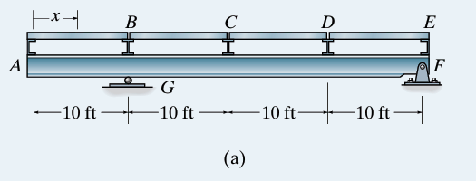
Derivation of Support Reactions \(\mathbf{R}_{\mathbf{G}}\) and \(\mathbf{R}_{\mathbf{F}}\)
The main girder rests on a roller support at \(G\) (\(x = 10\text{~ft}\)) and a pin support at \(F\) (\(x = 40\text{~ft}\)). The distance between supports is \(L_{GF} = 40 - 10 = 30\text{~ft}\).
To derive the support reaction formulas for any unit load position \(x\) measured from point \(A\):
Sum of moments about support \(F\) (\(x = 40\text{~ft}\)):
\[\sum_{}^{}M_{F} = 0 \Longrightarrow R_{G} \cdot (40 - 10) - 1 \cdot (40 - x) = 0\]
\[30R_{G} = 40 - x \Longrightarrow R_{G} = \frac{40 - x}{30}\]
Sum of moments about support \(G\) (\(x = 10\text{~ft}\)):
\[\sum_{}^{}M_{G} = 0 \Longrightarrow R_{F} \cdot (40 - 10) - 1 \cdot (x - 10) = 0\]
\[30R_{F} = x - 10 \Longrightarrow R_{F} = \frac{x - 10}{30}\]
Vertical Equilibrium Check:
\[R_{G} + R_{F} = \frac{40 - x}{30} + \frac{x - 10}{30} = \frac{30}{30} = 1\quad\text{(Satisfied)}\]
2. General Expression for Panel Shear \(\mathbf{V}_{\mathbf{CD}}\)
To find the internal shear force \(V_{CD}\), make a section cut anywhere inside panel \(CD\) (\(20\text{~ft} < x_{\text{cut}} < 30\text{~ft}\)) and sum the vertical forces acting to the left of the cut:
\[\sum_{}^{}F_{y} = 0 \Longrightarrow R_{G} - F_{A} - F_{B} - F_{C} - V_{CD} = 0\]
\[V_{CD} = R_{G} - \left( F_{A} + F_{B} + F_{C} \right)\]
3. Detailed Step-by-Step Calculations
Case 1: Load at Node \(\mathbf{A}\) (\(\mathbf{x = 0}\text{~ft}\))
Reactions:
\[R_{G} = \frac{40 - 0}{30} = \frac{40}{30} = \frac{4}{3}\]
\[R_{F} = \frac{0 - 10}{30} = - \frac{10}{30} = - \frac{1}{3}\]
Transmitted Floor Loads: \(F_{A} = 1\), \(F_{B} = 0\), \(F_{C} = 0\)
Panel Shear:
\[V_{CD} = R_{G} - F_{A} = \frac{4}{3} - 1 = \mathbf{+}\frac{\mathbf{1}}{\mathbf{3}}\]
Case 2: Load at Node \(\mathbf{B}\) (\(\mathbf{x = 10}\text{~ft}\))
Reactions:
\[R_{G} = \frac{40 - 10}{30} = \frac{30}{30} = 1\]
\[R_{F} = \frac{10 - 10}{30} = 0\]
Transmitted Floor Loads: \(F_{A} = 0\), \(F_{B} = 1\), \(F_{C} = 0\)
Panel Shear:
\[V_{CD} = R_{G} - F_{B} = 1 - 1 = \mathbf{0}\]
Case 3: Load at Node \(\mathbf{C}\) (\(\mathbf{x = 20}\text{~ft}\))
Reactions:
\[R_{G} = \frac{40 - 20}{30} = \frac{20}{30} = \frac{2}{3}\]
\[R_{F} = \frac{20 - 10}{30} = \frac{10}{30} = \frac{1}{3}\]
Transmitted Floor Loads: \(F_{A} = 0\), \(F_{B} = 0\), \(F_{C} = 1\)
Panel Shear:
\[V_{CD} = R_{G} - F_{C} = \frac{2}{3} - 1 = \mathbf{-}\frac{\mathbf{1}}{\mathbf{3}}\]
Case 4: Load at Midpoint of Panel \(\mathbf{CD}\) (\(\mathbf{x = 25}\text{~ft}\))
Reactions:
\[R_{G} = \frac{40 - 25}{30} = \frac{15}{30} = \frac{1}{2}\]
\[R_{F} = \frac{25 - 10}{30} = \frac{15}{30} = \frac{1}{2}\]
Transmitted Floor Loads (Distributed across Panel \(CD\)):
\[F_{C} = \frac{30 - 25}{10} = \frac{5}{10} = \frac{1}{2}\]
\[F_{D} = \frac{25 - 20}{10} = \frac{5}{10} = \frac{1}{2}\]
\[F_{A} = 0,\quad F_{B} = 0\]
Panel Shear:
\[V_{CD} = R_{G} - F_{C} = \frac{1}{2} - \frac{1}{2} = \mathbf{0}\]
Case 5: Load at Node \(\mathbf{D}\) (\(\mathbf{x = 30}\text{~ft}\))
Reactions:
\[R_{G} = \frac{40 - 30}{30} = \frac{10}{30} = \frac{1}{3}\]
\[R_{F} = \frac{30 - 10}{30} = \frac{20}{30} = \frac{2}{3}\]
Transmitted Floor Loads:
\[F_{A} = 0,\quad F_{B} = 0,\quad F_{C} = 0,\quad F_{D} = 1\]
Panel Shear:
(Since \(F_{D}\) acts to the right of the section cut, it does not enter the left-hand section equilibrium)
\[V_{CD} = R_{G} - 0 = \mathbf{+}\frac{\mathbf{1}}{\mathbf{3}}\]
Case 6: Load at Node \(\mathbf{E}\) (\(\mathbf{x = 40}\text{~ft}\))
Reactions:
\[R_{G} = \frac{40 - 40}{30} = 0\]
\[R_{F} = \frac{40 - 10}{30} = \frac{30}{30} = 1\]
Transmitted Floor Loads:
\[F_{A} = 0,\quad F_{B} = 0,\quad F_{C} = 0,\quad F_{E} = 1\]
Panel Shear:
\[V_{CD} = R_{G} - 0 = \mathbf{0}\]
4. Summary Table
| Load Position x | Panel Point | \(R_{G}\) | \[R_{F}\] | F\(F_{C}\) | Panel Shear \(V_{CD}\) |
|---|---|---|---|---|---|
| \[0\text{~ft}\] | A | \[+ 4/3\] | \[- 1/3\] | \[0\] | \[+ 1/3\] |
| \[10\text{~ft}\] | B (G) | \[1\] | \[0\] | \[0\] | \[0\] |
| \[20\text{~ft}\] | C | \[+ 2/3\] | \[+ 1/3\] | \[1\] | \[- 1/3\] |
| \[25\text{~ft}\] | Midpoint CD | \[+ 1/2\] | \[+ 1/2\] | \[1/2\] | \[0\] |
| \[30\text{~ft}\] | D | \[+ 1/3\] | \[+ 2/3\] | \[0\] | \[+ 1/3\] |
| \[40\text{~ft}\] | E (F) | \[0\] | \[1\] | \[0\] | \[0\] |
Influence Line. When the tabular values are plotted and the points connected with straight line segments, the resulting influence line for \(V_{CD}\) is as shown in Fig. 30.e.
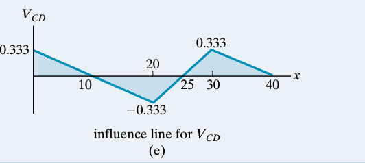
Example 2
Draw the influence line for the moment at point F for the floor girder in Fig. 31.
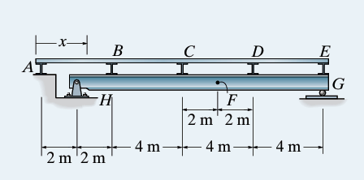
Solution
Static Model and System Geometry
From the structural diagram:
Origin (\(x = 0\)): Set at the leftmost end at node \(A\).
Panel Points (Floor Beams / Load Transfer Nodes):
Node \(A\): \(x_{A} = 0\text{~m}\) (rests directly on the abutment/wall)
Node \(B\): \(x_{B} = 4\text{~m}\)
Node \(C\): \(x_{C} = 8\text{~m}\)
Node \(D\): \(x_{D} = 12\text{~m}\)
Node \(E\): \(x_{E} = 16\text{~m}\)
Main Girder Supports:
Pin support \(H\): \(x_{H} = 2\text{~m}\)
Roller support \(G\): \(x_{G} = 16\text{~m}\)
Main girder span: \(L = x_{G} - x_{H} = 16 - 2 = 14\text{~m}\)
Section of Interest \(F\): \(x_{F} = 10\text{~m}\) (located \(8\text{~m}\) from \(H\) and \(6\text{~m}\) from \(G\)).
2. General Support Reaction Equations
For a concentrated force \(P\) acting on the main girder at position \(x_{\text{girder}}\) (measured from \(A\)):
Sum of moments about support \(H\) (\(x = 2\text{~m}\)):
\[\sum_{}^{}M_{H} = 0 \Longrightarrow R_{G} \cdot (14) - P \cdot \left( x_{\text{girder}} - 2 \right) = 0 \Longrightarrow R_{G} = P \cdot \frac{x_{\text{girder}} - 2}{14}\]
Sum of moments about support \(G\) (\(x = 16\text{~m}\)):
\[\sum_{}^{}M_{G} = 0 \Longrightarrow R_{H} \cdot (14) - P \cdot \left( 16 - x_{\text{girder}} \right) = 0 \Longrightarrow R_{H} = P \cdot \frac{16 - x_{\text{girder}}}{14}\]
3. Principle of Indirect Loading
In an indirectly loaded floor system, the unit moving load (\(1\text{~kN}\)) travels across the slab, which transfers concentrated loads exclusively to the panel points (\(A,B,C,D,E\)).
Between adjacent panel points, any internal structural effect varies strictly linearly (straight line segments). Therefore, we only need to calculate \(M_{F}\) by placing the \(1\text{~kN}\) unit load successively at each panel point.
4. Node-by-Node Detailed Calculations
Case 1: Unit Load at Node \(\mathbf{A}\) (\(\mathbf{x = 0}\text{~m}\))
The load is applied directly above the abutment wall.
No force is transmitted to the main girder (\(F_{B} = F_{C} = F_{D} = F_{E} = 0\)).
Support reactions: \(R_{H} = 0\), \(R_{G} = 0\).
Moment at \(F\):
\[M_{F} = 0\text{~kN} \cdot \text{m}\]
Case 2: Unit Load at Node \(\mathbf{B}\) (\(\mathbf{x = 4}\text{~m}\))
The floor slab transfers the entire load to node \(B\): \(F_{B} = 1\text{~kN}\) at \(x = 4\text{~m}\).
Support reaction at \(G\):
\[R_{G} = 1 \cdot \frac{4 - 2}{14} = \frac{2}{14} = \frac{1}{7}\text{~kN}\]
Cut section at point \(F\) (\(x_{F} = 10\text{~m}\)) and consider the right segment (\(F \rightarrow G\)):
\[M_{F} = R_{G} \cdot (16 - 10) = \left( \frac{1}{7} \right) \cdot 6 = \mathbf{+}\frac{\mathbf{6}}{\mathbf{7}}\text{~kN}\mathbf{\cdot}\text{m} \approx + 0.857\text{~kN} \cdot \text{m}\]
Case 3: Unit Load at Node \(\mathbf{C}\) (\(\mathbf{x = 8}\text{~m}\))
The floor slab transfers the entire load to node \(C\): \(F_{C} = 1\text{~kN}\) at \(x = 8\text{~m}\).
Support reaction at \(G\):
\[R_{G} = 1 \cdot \frac{8 - 2}{14} = \frac{6}{14} = \frac{3}{7}\text{~kN}\]
Cut section at point \(F\) (\(x_{F} = 10\text{~m}\)) and consider the right segment (\(F \rightarrow G\)):
\[M_{F} = R_{G} \cdot (16 - 10) = \left( \frac{3}{7} \right) \cdot 6 = \mathbf{+}\frac{\mathbf{18}}{\mathbf{7}}\text{~kN}\mathbf{\cdot}\text{m} \approx + 2.571\text{~kN} \cdot \text{m}\]
Case 4: Unit Load at Node \(\mathbf{D}\) (\(\mathbf{x = 12}\text{~m}\))
The floor slab transfers the entire load to node \(D\): \(F_{D} = 1\text{~kN}\) at \(x = 12\text{~m}\).
Support reaction at \(H\):
\[R_{H} = 1 \cdot \frac{16 - 12}{14} = \frac{4}{14} = \frac{2}{7}\text{~kN}\]
Cut section at point \(F\) (\(x_{F} = 10\text{~m}\)) and consider the left segment (\(H \rightarrow F\)):
\[M_{F} = R_{H} \cdot (10 - 2) = \left( \frac{2}{7} \right) \cdot 8 = \mathbf{+}\frac{\mathbf{16}}{\mathbf{7}}\text{~kN}\mathbf{\cdot}\text{m} \approx + 2.286\text{~kN} \cdot \text{m}\]
Case 5: Unit Load at Node \(\mathbf{E}\) (\(\mathbf{x = 16}\text{~m}\))
The load acts directly over support \(G\) (\(R_{G} = 1\text{~kN}\), \(R_{H} = 0\)).
Cut section at point \(F\) and consider the left segment:
\[M_{F} = R_{H} \cdot (10 - 2) = 0 \cdot 8 = \mathbf{0}\text{~kN}\mathbf{\cdot}\text{m}\]
5. Verification at Intermediate Position (\(\mathbf{x = 10}\text{~m}\))
When the unit load is directly over point \(F\) (\(x = 10\text{~m}\), midpoint of panel \(CD\)):
Load distribution to nodes \(C\) and \(D\):
\[F_{C} = \frac{12 - 10}{4} = \frac{1}{2}\text{~kN},\quad F_{D} = \frac{10 - 8}{4} = \frac{1}{2}\text{~kN}\]
Support reaction at \(G\):
\[R_{G} = \left( \frac{1}{2} \right) \cdot \frac{8 - 2}{14} + \left( \frac{1}{2} \right) \cdot \frac{12 - 2}{14} = \frac{3}{14} + \frac{5}{14} = \frac{8}{14} = \frac{4}{7}\text{~kN}\]
Moment at \(F\) (right segment \(F \rightarrow G\)):
\[M_{F} = R_{G} \cdot (16 - 10) - F_{D} \cdot (12 - 10) = \left( \frac{4}{7} \right) \cdot 6 - \left( \frac{1}{2} \right) \cdot 2 = \frac{24}{7} - 1 = \mathbf{+}\frac{\mathbf{17}}{\mathbf{7}}\text{~kN}\mathbf{\cdot}\text{m} \approx + 2.429\text{~kN} \cdot \text{m}\]
(Note: This matches the arithmetic mean between \(M_{F}(C) = \frac{18}{7}\) and \(M_{F}(D) = \frac{16}{7}\), confirming linear continuity across the panel).
6. Summary Table
| Load Position (x) | Panel Point | Reaction RH | Reaction RG | Moment MF (kN⋅m) |
|---|---|---|---|---|
| \[x = 0\text{~m}\] | A | \[0\] | \[0\] | \[0\] |
| \[x = 4\text{~m}\] | B | \[+ 6/7\] | \[+ 1/7\] | \[+ \frac{6}{7} \approx + 0.857\] |
| \[x = 8\text{~m}\] | C | \[+ 4/7\] | \[+ 3/7\] | \(+ \frac{18}{7} \approx + 2.571\) (Maximum) |
| \[x = 10\text{~m}\] | Midpoint \(CD\) (\(F\)) | \[+ 3/7\] | \[+ 4/7\] | \[+ \frac{17}{7} \approx + 2.429\] |
| \[x = 12\text{~m}\] | D | \[+ 2/7\] | \[+ 5/7\] | \[+ \frac{16}{7} \approx + 2.286\] |
| \[x = 16\text{~m}\] | E | \[0\] | \[1\] | \[0\] |
7. Plotting Instructions
Horizontal Baseline: Draw a reference axis from \(x = 0\) to \(x = 16\text{~m}\) marking nodes \(A,B,C,D,E\).
Plot Key Ordinates:
At \(A\) (\(x = 0\)): \(0\)
At \(B\) (\(x = 4\text{~m}\)): \(+ 6/7\)
At \(C\) (\(x = 8\text{~m}\)): \(+ 18/7\)
At \(D\) (\(x = 12\text{~m}\)): \(+ 16/7\)
At \(E\) (\(x = 16\text{~m}\)): \(0\)
Connect Segments: Join adjacent points sequentially (\(A \rightarrow B \rightarrow C \rightarrow D \rightarrow E\)) using straight line segments:
\(A \rightarrow B\): Increasing line from \(0\) to \(+ 6/7\).
\(B \rightarrow C\): Increasing line from \(+ 6/7\) to the maximum peak at \(+ 18/7\).
\(C \rightarrow D\): Continuous decreasing line from \(+ 18/7\) to \(+ 16/7\) (passing through \(+ 17/7\) at \(x = 10\text{~m}\)).
\(D \rightarrow E\): Decreasing line from \(+ 16/7\) back to \(0\).
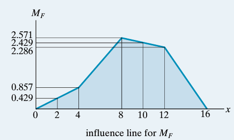
I.5 Influence Lines for Trusses
Trusses are often used as primary load-carrying elements for bridges. Hence, for design it is important to be able to construct the influence lines for each of its members. As shown in Fig. 33, the loading on the bridge deck is transmitted to stringers, which in turn transmit the loading to floor beams and then to the joints along the bottom cord of the truss.
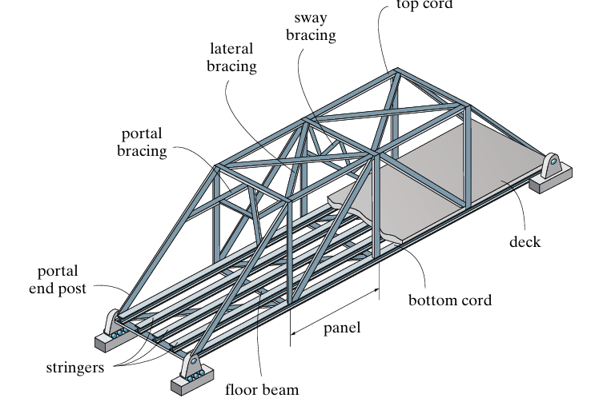
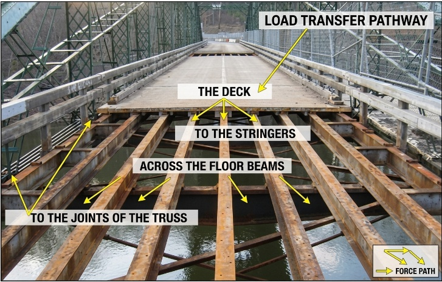
Trusses are commonly used to support bridge loads. To draw the influence line of a truss member, a unit load is placed successively at each joint along the bottom chord. The force in the member is then calculated using the method of joints or method of sections. The calculated forces are plotted against the load positions. Tension is taken as positive (+) and compression as negative (−). Finally, the points are connected with straight lines to obtain the influence line.Exercice 01
Draw the influence line diagrams for the axial forces in members IJ, CD, and ID of the bridge truss shown in Fig. 6–24a.
To plot the influence lines for the axial forces in members \(IJ\), \(CD\), and \(ID\), we use Method of Sections (Ritter's method).
1. Geometry and Support Reactions
Dimensions:
\(6\) panels of \(5\text{~m}\) each \(\Longrightarrow\) Total length \(= 30\text{~m}\).
Truss height \(h = 4\text{~m}\).
Node coordinates along the bottom chord:
\(A = 0\text{~m}\) (Support A)
\(B = 5\text{~m}\)
\(C = 10\text{~m}\)
\(D = 15\text{~m}\)
\(E = 20\text{~m}\) (Support E)
\(F = 25\text{~m}\)
\(G = 30\text{~m}\) (Cantilever end from \(E\) to \(G\))
Support Reactions for a moving downward unit load \(P = 1\) at position \(x \in \left\lbrack 0,30\text{~m} \right\rbrack\):
\[\sum_{}^{}M_{E} = 0 \Longrightarrow R_{A}(x) = \frac{20 - x}{20}\]
\[\sum_{}^{}M_{A} = 0 \Longrightarrow R_{E}(x) = \frac{x}{20}\]
2. Influence Line for Axial Force \(\mathbf{N}_{\mathbf{IJ}}\) (Top Chord)
Pass a section cutting through members \(IJ\), \(ID\), and \(CD\). Taking moments about node \(D\) (\(x_{D} = 15\text{~m},y_{D} = 0\)):
Load to the right of \(D\) (\(15\text{~m} \leq x \leq 30\text{~m}\)):
Isolating the left section:
\[\sum_{}^{}M_{D} = 0 \Longrightarrow R_{A} \cdot 15 + N_{IJ} \cdot 4 = 0 \Longrightarrow N_{IJ}(x) = - \frac{15}{4}R_{A}(x) = \frac{3(x - 20)}{16}\]
Load to the left of \(D\) (\(0 \leq x \leq 15\text{~m}\)):
Isolating the right section:
\[\sum_{}^{}M_{D} = 0 \Longrightarrow R_{E} \cdot 5 + N_{IJ} \cdot 4 = 0 \Longrightarrow N_{IJ}(x) = - \frac{5}{4}R_{E}(x) = - \frac{x}{16}\]
Key Values for \(\mathbf{N}_{\mathbf{IJ}}\):
| Position x (m) | 0 (A) | 5 (B) | 10 (C) | 15 (D) | 20 (E) | 25 (F) | 30 (G) |
|---|---|---|---|---|---|---|---|
| \[N_{IJ}\] | \[0\] | \[- 0.3125\] | \[- 0.625\] | \[- 0.9375\] | \[0\] | \[+ 0.9375\] | \[+ 1.875\] |
Diagram Shape: A negative triangular shape from \(A(0)\) to \(E(20)\) peaking at \(D(15)\) with \(- 0.9375\), followed by a straight upward line reaching \(+ 1.875\) at \(G(30)\).
3. Influence Line for Axial Force \(\mathbf{N}_{\mathbf{CD}}\) (Bottom Chord)
Taking moments about node \(I\) (\(x_{I} = 10\text{~m},y_{I} = 4\text{~m}\)):
Load to the left of \(C\) (\(0 \leq x \leq 10\text{~m}\)):
Isolating the right section:
\[\sum_{}^{}M_{I} = 0 \Longrightarrow R_{E} \cdot 10 - N_{CD} \cdot 4 = 0 \Longrightarrow N_{CD}(x) = \frac{10}{4}R_{E}(x) = \frac{x}{8}\]
Load to the right of \(C\) (\(10\text{~m} \leq x \leq 30\text{~m}\)):
Isolating the left section:
\[\sum_{}^{}M_{I} = 0 \Longrightarrow R_{A} \cdot 10 - N_{CD} \cdot 4 = 0 \Longrightarrow N_{CD}(x) = \frac{10}{4}R_{A}(x) = \frac{20 - x}{8}\]
Key Values for \(\mathbf{N}_{\mathbf{CD}}\):
| Position x (m) | 0 (A) | 5 (B) | 10 (C) | 15 (D) | 20 (E) | 25 (F) | 30 (G) |
|---|---|---|---|---|---|---|---|
| \[N_{CD}\] | \[0\] | \[+ 0.625\] | \[+ 1.25\] | \[+ 0.625\] | \[0\] | \[- 0.625\] | \[- 1.25\] |
Diagram Shape: A positive triangle from \(A(0)\) to \(E(20)\) peaking at \(C(10)\) with \(+ 1.25\), then sloping downward to \(- 1.25\) at \(G(30)\).
4. Influence Line for Axial Force \(\mathbf{N}_{\mathbf{ID}}\) (Diagonal)
Diagonal \(ID\) connects node \(I(10,4)\) to \(D(15,0)\).
Inclination: \(\sin\alpha = \frac{h}{L_{ID}} = \frac{4}{\sqrt{5^{2} + 4^{2}}} = \frac{4}{\sqrt{41}} \approx 0.6247\).
Applying vertical force equilibrium \(\sum_{}^{}F_{y} = 0\) across the section:
Load to the left of panel \(CD\) (\(0 \leq x \leq 10\text{~m}\)):
Isolating the right section:
\[\sum_{}^{}F_{y} = 0 \Longrightarrow R_{E} + N_{ID}\sin\alpha = 0 \Longrightarrow N_{ID}(x) = - \frac{R_{E}(x)}{\sin\alpha} = - \frac{\sqrt{41}}{80}x \approx - 0.08004\, x\]
Load to the right of panel \(CD\) (\(15\text{~m} \leq x \leq 30\text{~m}\)):
Isolating the left section:
\[\sum_{}^{}F_{y} = 0 \Longrightarrow R_{A} - N_{ID}\sin\alpha = 0 \Longrightarrow N_{ID}(x) = \frac{R_{A}(x)}{\sin\alpha} = \frac{\sqrt{41}}{80}(20 - x) \approx 0.08004\,(20 - x)\]
Inside panel \(CD\) (\(10\text{~m} \leq x \leq 15\text{~m}\)):
Linear transition between \(x = 10\text{~m}\) and \(x = 15\text{~m}\), crossing zero (\(N_{ID} = 0\)) at \(x_{0} = 13.33\text{~m}\) (i.e., \(x = \frac{40}{3}\text{~m}\)).
Key Values for \(\mathbf{N}_{\mathbf{ID}}\):
| Position x (m) | 0 (A) | 10 (C) | 13.33 | 15 (D) | 20 (E) | 30 (G) |
|---|---|---|---|---|---|---|
| \(N_{ID}\) (Exact) | \[0\] | \[- \frac{\sqrt{41}}{8}\] | \[0\] | \[+ \frac{\sqrt{41}}{16}\] | \[0\] | \[- \frac{\sqrt{41}}{8}\] |
| \(N_{ID}\) (Decimal) | \[0\] | \[- 0.800\] | \[0\] | \[+ 0.400\] | \[0\] | \[- 0.800\] |
Diagram Shape:
From \(A(0)\) to \(C(10)\): linearly decreases from \(0\) to \(- 0.800\).
From \(C(10)\) to \(D(15)\): linear transition line passing through \(0\) at \(x = 13.33\text{~m}\) up to \(+ 0.400\) at \(D(15)\).
From \(D(15)\) to \(G(30)\): straight line going through \(0\) at \(E(20)\) and down to \(- 0.800\) at \(G(30)\).
Plotting Summary
| Node / Position x | A (0 m) | C (10 m) | D (15 m) | E (20 m) | G (30 m) |
|---|---|---|---|---|---|
| \[N_{IJ}\] | \[0\] | \[- 0.625\] | \[- 0.938\] | \[0\] | \[+ 1.875\] |
| \[N_{CD}\] | \[0\] | \[+ 1.250\] | \[+ 0.625\] | \[0\] | \[- 1.250\] |
| \[N_{ID}\] | \[0\] | \[- 0.800\] | \[+ 0.400\] | \[0\] | \[- 0.800\] |
Example 02
Draw the influence line for the force in member CG of the bridge truss shown in Fig. 34.
Solution
. Static Analysis of Joint \(\mathbf{C}\) (Method of Joints)
To determine the force \(F_{CG}\) in the vertical member \(CG\), isolate joint \(C\):
Members meeting at joint \(C\):
Two collinear horizontal bottom-chord members: \(CB\) and \(CD\).
One vertical member: \(CG\).
External loading:
As the unit moving load \(P = 1\) moves across the bridge deck, a fraction \(P_{C}\) is transferred to joint \(C\) via the floor beams.
Summing forces vertically (\(\sum_{}^{}F_{y} = 0\)) at joint \(C\):
\[\sum_{}^{}F_{y} = 0 \Longrightarrow F_{CG} - P_{C} = 0 \Longrightarrow F_{CG} = P_{C}\]
Thus, the axial force in member \(CG\) is directly equal to the fraction of the unit load transmitted to joint \(C\).
2. Calculation of Force \(\mathbf{F}_{\mathbf{CG}}\) for Various Load Positions (\(\mathbf{x}\))
Consider a unit load \(P = 1\) moving along the bottom chord from \(x = 0\text{~m}\) (joint \(A\)) to \(x = 24\text{~m}\) (joint \(E\)):
Load between \(x = 0\text{~m}\) and \(x = 6\text{~m}\) (Panel \(AB\)):
The load is carried entirely by joints \(A\) and \(B\).
No load is transmitted to joint \(C\) (\(P_{C} = 0\)).
\(F_{CG} = 0\)
Load between \(x = 6\text{~m}\) and \(x = 12\text{~m}\) (Panel \(BC\)):
By the lever rule, the fraction transmitted to joint \(C\) increases linearly:
\[P_{C} = \frac{x - 6}{12 - 6} = \frac{x - 6}{6}\]
At \(x = 6\text{~m}\) (Joint \(B\)): \(F_{CG} = 0\)
At \(x = 12\text{~m}\) (Joint \(C\)): \(F_{CG} = + 1\text{~(Tension)}\)
Load between \(x = 12\text{~m}\) and \(x = 18\text{~m}\) (Panel \(CD\)):
The fraction transmitted to joint \(C\) decreases linearly:
\[P_{C} = \frac{18 - x}{18 - 12} = \frac{18 - x}{6}\]
At \(x = 12\text{~m}\) (Joint \(C\)): \(F_{CG} = + 1\text{~(Tension)}\)
At \(x = 18\text{~m}\) (Joint \(D\)): \(F_{CG} = 0\)
Load between \(x = 18\text{~m}\) and \(x = 24\text{~m}\) (Panel \(DE\)):
The load is carried entirely by joints \(D\) and \(E\).
No load is transmitted to joint \(C\) (\(P_{C} = 0\)).
\(F_{CG} = 0\)
3. Summary Table of Ordinates
| Load Position x (m) | Node | Force FCG | Stress State |
|---|---|---|---|
| \[0\] | A | \[0\] | Zero force |
| \[6\] | B | \[0\] | Zero force |
| \[12\] | C | \[+ 1\] | Maximum Tension |
| \[18\] | D | \[0\] | Zero force |
| \[24\] | E | \[0\] | Zero force |
4. Instructions for Plotting the Influence Line
Horizontal Baseline: Draw a horizontal axis representing the total span from \(x = 0\text{~m}\) to \(x = 24\text{~m}\), marking nodes \(A,B,C,D,E\).
Plot Segments:
From \(x = 0\text{~m}\) to \(x = 6\text{~m}\) (\(A \rightarrow B\)): Draw a horizontal line lying on the axis (\(F_{CG} = 0\)).
From \(x = 6\text{~m}\) to \(x = 12\text{~m}\) (\(B \rightarrow C\)): Draw a line sloping upward from \(0\) to a maximum value of \(+ 1\) above the axis.
From \(x = 12\text{~m}\) to \(x = 18\text{~m}\) (\(C \rightarrow D\)): Draw a line sloping downward from \(+ 1\) to \(0\).
From \(x = 18\text{~m}\) to \(x = 24\text{~m}\) (\(D \rightarrow E\)): Draw a horizontal line lying on the axis (\(F_{CG} = 0\)).
I.5 Influence Lines for frame
For a structural frame, influence lines can be used to determine the support reactions, shear force, and bending moment at a specific point. A unit load (\(W = 1\)) is moved along the frame, and the corresponding value of the required function is calculated for each load position. These values are then plotted against the load position to obtain the influence line.
Key Points:
Move a unit load (\(W = 1\)) along the frame.
Calculate the desired function (reaction, shear force, or bending moment) at the specified point.
Plot the calculated values versus the load position (\(x\)).
Connect the key points with straight lines.
Example 01
Consider the frame shown in Fig. 36. The goal is to draw the influence lines for:
a) The vertical reaction at support \(A\) (\(R_{A}\))
b) The shear force at point \(C\) (\(V_{C}\))
c) The bending moment at point \(C\) (\(M_{C}\))
Solution
Global Static Analysis & Reaction Equations
Frame geometry and supports :
The frame consists of a horizontal beam \(BD\) with a total span of \(L = 8\text{~m}\) (\(4\text{~m} + 4\text{~m}\)) and two vertical columns of height \(h = 3\text{~m}\).
Support \(A\) is a pin support (restraining vertical reaction \(R_{A}\) and horizontal reaction \(H_{A}\)).
Support \(E\) is a roller support (restraining vertical reaction \(R_{E}\) only, \(H_{E} = 0\)).
A downward unit vertical load \(W = 1\) moves along the horizontal member \(BD\), with its position defined by distance \(x\) measured from joint \(B\) (\(0 \leq x \leq 8\text{~m}\)).
Static equilibrium equations:
Horizontal Equilibrium (\(\sum_{}^{}F_{x} = 0\)):
\[H_{A} = 0\]
Since no horizontal external force acts on the frame, the columns carry no horizontal shear, and the frame behaves like a simply supported beam of \(8\text{~m}\) span.
Moment Equilibrium about Support \(E\) (\(\sum_{}^{}M_{E} = 0\)):
\[R_{A} \cdot 8 - 1 \cdot (8 - x) = 0 \Longrightarrow R_{A}(x) = 1 - \frac{x}{8}\]
Vertical Equilibrium (\(\sum_{}^{}F_{y} = 0\)):
\[R_{A} + R_{E} = 1 \Longrightarrow R_{E}(x) = \frac{x}{8}\]
2. Influence Line Equations & Calculations
a) Influence Line for \(\mathbf{R}_{\mathbf{A}}\) (Vertical Reaction at Support A)
Equation:
\[R_{A}(x) = 1 - \frac{x}{8}\quad\text{for~}0 \leq x \leq 8\text{~m}\]
Key Coordinates:
At load position \(B\) (\(x = 0\text{~m}\)): \(R_{A} = 1 - \frac{0}{8} = + 1.0\)
At load position \(C\) (\(x = 4\text{~m}\)): \(R_{A} = 1 - \frac{4}{8} = + 0.5\)
At load position \(D\) (\(x = 8\text{~m}\)): \(R_{A} = 1 - \frac{8}{8} = 0.0\)
b) Influence Line for \(\mathbf{V}_{\mathbf{C}}\) (Shear Force at Point C)
Method of Sections at Point \(C\) (\(x_{C} = 4\text{~m}\)):
Case 1: Load on segment \(BC\) (\(0 \leq x < 4\text{~m}\)):
\[V_{C}(x) = R_{A} - 1 = \left( 1 - \frac{x}{8} \right) - 1 = - \frac{x}{8}\]
At \(x = 0\text{~m}\) (Joint \(B\)): \(V_{C} = 0.0\)
At \(x \rightarrow 4^{-}\text{~m}\) (Just left of \(C\)): \(V_{C} = - \frac{4}{8} = - 0.5\)
Case 2: Load on segment \(CD\) (\(4\text{~m} < x \leq 8\text{~m}\)):
\[V_{C}(x) = R_{A} = 1 - \frac{x}{8}\]
At \(x \rightarrow 4^{+}\text{~m}\) (Just right of \(C\)): \(V_{C} = 1 - \frac{4}{8} = + 0.5\)
At \(x = 8\text{~m}\) (Joint \(D\)): \(V_{C} = 1 - \frac{8}{8} = 0.0\)
Unit Jump at Point \(C\):
\[\Delta V_{C} = V_{C}\left( 4^{+} \right) - V_{C}\left( 4^{-} \right) = + 0.5 - ( - 0.5) = 1.0\]
c) Influence Line for \(\mathbf{M}_{\mathbf{C}}\) (Bending Moment at Point C)
Sign Convention: Positive bending moment causes sagging (tension at the bottom fibers).
Equations by Segment:
Case 1: Load on segment \(BC\) (\(0 \leq x \leq 4\text{~m}\)):
\[M_{C}(x) = R_{E} \cdot 4 = \left( \frac{x}{8} \right) \cdot 4 = \frac{x}{2}\]
At \(x = 0\text{~m}\) (Joint \(B\)): \(M_{C} = 0.0\text{~kN} \cdot \text{m}\)
At \(x = 4\text{~m}\) (Point \(C\)): \(M_{C} = \frac{4}{2} = + 2.0\text{~kN} \cdot \text{m}\)
Case 2: Load on segment \(CD\) (\(4\text{~m} \leq x \leq 8\text{~m}\)):
\[M_{C}(x) = R_{A} \cdot 4 = \left( 1 - \frac{x}{8} \right) \cdot 4 = 4 - \frac{x}{2}\]
At \(x = 4\text{~m}\) (Point \(C\)): \(M_{C} = 4 - \frac{4}{2} = + 2.0\text{~kN} \cdot \text{m}\)
At \(x = 8\text{~m}\) (Joint \(D\)): \(M_{C} = 4 - \frac{8}{2} = 0.0\text{~kN} \cdot \text{m}\)
3. Summary Table of Coordinates (Influence Line Values)
| Load Position (x) | Joint B (0 m) | Point C− (4− m) | Point C+ (4+ m) | Joint D (8 m) |
|---|---|---|---|---|
| \(R_{A}\) (Vertical Reaction at A) | \[+ 1.0\] | \[+ 0.5\] | \[+ 0.5\] | \[0.0\] |
| \(V_{C}\) (Shear Force at C) | \[0.0\] | \[- 0.5\] | \[+ 0.5\] | \[0.0\] |
| \(M_{C}\) (Bending Moment at C) | \[0.0\text{~kN} \cdot \text{m}\] | \[+ 2.0\text{~kN} \cdot \text{m}\] | \[+ 2.0\text{~kN} \cdot \text{m}\] | \[0.0\text{~kN} \cdot \text{m}\] |
Example
Solution
Support Reactions (\(\mathbf{R}_{\mathbf{B}}\) and \(\mathbf{R}_{\mathbf{C}}\))
To determine the influence lines for the support reactions, a unit vertical load \(P = 1\) moves along the top beam \(AD\) (\(0 \leq x_{p} \leq 8\text{~m}\)).
Moment equilibrium about Support \(B\) (\(\sum_{}^{}M_{B} = 0\)):
\[R_{C} \cdot 4 - 1 \cdot \left( x_{p} - 2 \right) = 0 \Longrightarrow R_{C} = \frac{x_{p} - 2}{4}\]
Vertical force equilibrium (\(\sum_{}^{}F_{y} = 0\)):
\[R_{B} + R_{C} - 1 = 0 \Longrightarrow R_{B} = \frac{6 - x_{p}}{4}\]
Horizontal reaction at Support \(B\) (\(H_{B}\)):
\[H_{B} = 0\quad\left( \text{for~all~}x_{p} \right)\]
Since no external horizontal forces act on the frame, the horizontal reaction remains zero.
2. Internal Forces at Section \(\mathbf{x}\) (\(\mathbf{x}_{\mathbf{p}}\mathbf{= 1}\text{~m}\))
Shear Force (\(V_{x}\)):
For \(0 \leq x_{p} < 1\text{~m}\) (load to the left of section \(x\)): \(V_{x} = - 1\)
For \(1\text{~m} < x_{p} \leq 8\text{~m}\) (load to the right of section \(x\)): \(V_{x} = 0\)
Bending Moment (\(M_{x}\)):
For \(0 \leq x_{p} \leq 1\text{~}\text{m}\): \(M_{x} = x_{p} - 1\)
For \(1\text{~m} \leq x_{p} \leq 8\text{~}\text{m}\): \(M_{x} = 0\)
3. Shear Force Just Right of Column Joint (\(\mathbf{V}_{\mathbf{By}}\))
This corresponds to the shear force in the horizontal beam segment immediately to the right of the joint above column \(B\) (\(x_{p} = 2^{+}\)) :
For \(0 \leq x_{p} < 2\text{~}\text{m}\): \(V_{By} = R_{C} = \frac{x_{p} - 2}{4}\)
For \(2\text{~m} < x_{p} \leq 8\text{~}\text{m}\): \(V_{By} = R_{C} - 1 = \frac{x_{p} - 6}{4}\)
4. Internal Forces at Section \(\mathbf{y}\) (\(\mathbf{x}_{\mathbf{p}}\mathbf{= 4}\text{~m}\))
Shear Force (\(V_{y}\)):
For \(0 \leq x_{p} < 4\text{~}\text{m}\): \(V_{y} = R_{C} = \frac{x_{p} - 2}{4}\)
For \(4\text{~m} < x_{p} \leq 8\text{~}\text{m}\): \(V_{y} = R_{C} - 1 = \frac{x_{p} - 6}{4}\)
Bending Moment (\(M_{y}\)):
For \(0 \leq x_{p} \leq 4\text{~}\text{m}\): \(M_{y} = - 2R_{C} = - \frac{x_{p} - 2}{2}\)
For \(4\text{~m} \leq x_{p} \leq 8\text{~}\text{m}\): \(M_{y} = \frac{x_{p} - 6}{2}\)
5. Internal Forces at Section \(\mathbf{z}\) (Vertical Column \(\mathbf{JB}\))
Axial Force (\(A_{z}\) / Normal Force):
The vertical column transmits the reaction \(R_{B}\) (compression when negative) :
\[A_{z} = - R_{B} = \frac{x_{p} - 6}{4}\]
Column Shear Force (\(V_{z}\)):
\[V_{z} = 0\quad\left( \text{for~all~}x_{p} \right)\]
| Function / Load Position | Point A (xp=0 m) | Section x (xp=1 m) | Joint B (xp=2 m) | Section y (xp=4 m) | Support C (xp=6 m) | Point D (xp=8 m) |
|---|---|---|---|---|---|---|
| \(R_{C}\) (Reaction at C) | \[- 0.5\] | \[- 0.25\] | \[0.0\] | \[+ 0.5\] | \[+ 1.0\] | \[+ 1.5\] |
| \(R_{B}\) (Reaction at B) | \[+ 1.5\] | \[+ 1.25\] | \[+ 1.0\] | \[+ 0.5\] | \[0.0\] | \[- 0.5\] |
| \(V_{x}\) (Shear at x) | \[- 1.0\] | \[- 1.0 \mid 0.0\] | \[0.0\] | \[0.0\] | \[0.0\] | \[0.0\] |
| \(M_{x}\) (Moment at x) | \[- 1.0\] | \[0.0\] | \[0.0\] | \[0.0\] | \[0.0\] | \[0.0\] |
| \(V_{By}\) (Shear right of B) | \[- 0.5\] | \[- 0.25\] | \[0.0/ - 1.0\] | \[- 0.5\] | \[0.0\] | \[+ 0.5\] |
| \(V_{y}\) (Shear at y) | \[- 0.5\] | \[- 0.25\] | \[0.0\] | \[+ 0.5/ - 0.5\] | \[0.0\] | \[+ 0.5\] |
| \(M_{y}\) (Moment at y) | \[+ 1.0\] | \[+ 0.5\] | \[0.0\] | \[- 1.0\] | \[0.0\] | \[+ 1.0\] |
| \(A_{z}\) (Axial Force in Column) | \[- 1.5\] | \[- 1.25\] | \[- 1.0\] | \[- 0.5\] | \[0.0\] | \[+ 0.5\] |
| \(V_{z}\) (Shear in Column) | \[0.0\] | \[0.0\] | \[0.0\] | \[0.0\] | \[0.0\] | \[0.0\] |
6. Summary Table of Influence Line Ordinates
Example 03
Example: Draw the I.L. for the following functions for the frame shown below. RB RC, RAY, Vc, VH, VJ, MH and MJ.
Solution
I.6 Application of Influence Lines :